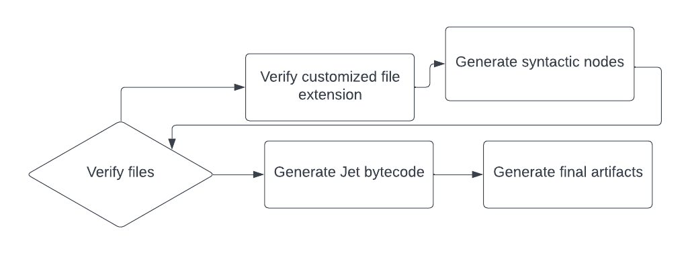

Jet Specification
Note: this document includes incomplete sections. The several details of the ECMA-357 second edition specification have not been substantially included in this specification in the present.
The ActionScript 3 language has influenced in the creation of Jet. ActionScript 3 was designed based on ECMAScript fourth edition, which has been abandoned by the TC39 committee. ActionScript 3 incorporated the ECMAScript for XML standard, which has been obsoleted and removed from supporting JavaScript engines. The Jet language extends and changes the ActionScript 3 language in several ways.
The following people have contributed to this specification:
-
Matheus Dias de Souza, Hydroper
ActionScript 3 was designed by Gary Grossman.
The following are the main people that have contributed to the ECMA-357 second edition specification, in which this specification is influenced:
-
John Schneider, BEA/AgileDelta (Lead Editor)
Rok Yu, Microsoft (Supporting Editor)
Jeff Dyer, Macromedia (Supporting Editor)
1 Scope
This specification defines the syntax and semantics of Jet, a multi-purpose scripting language influenced by ActionScript 3.
2 Conformance
A conforming implementation of Jet shall provide support for all the mandatory types, values, objects, properties, functions, and program syntax and semantics described in this specification.
A conforming implementation of this specification shall interpret characters in conformance with the Unicode Standard, Version 2.1 or later.
A conforming implementation of Jet may provide additional types, values, objects, properties, and functions beyond those described in this specification.
3 References
3.1 Normative References
Document Object Model (DOM) Level 2 Specifications, W3C Recommendation, 13 November 2000.
ECMA-262, 1999, ECMAScript Language Specification – 3rd edition.
Extensible Markup Language 1.0 (Second Edition), W3C Recommendation 6 October 2000.
Namespaces in XML, W3C Recommendation, 14 January 1999.
ISO/IEC 10646:2003, Information Technology – Universal Multiple-Octet Coded Character Set (UCS).
Unicode Inc. (1996), The Unicode StandardTM, Version 2.0. ISBN: 0-201-48345-9, Addison-Wesley Publishing Co., Menlo Park, California.
Unicode Inc. (1998), Unicode Technical Report #8: The Unicode StandardTM, Version 2.1.
Unicode Inc. (1998), Unicode Technical Report #15: Unicode Normalization Forms.
XML Information Set, W3C Recommendation 24 October 2001.
XML Path Language (XPath) Version 1.0, W3C Recommendation 16 November 1999.
XML Schema Part 1: Structures, W3C Recommendation, 2 May 2001.
XML Schema Part 2: Datatypes, W3C Recommendation, 2 May 2001.
SemVer, Semantic Versioning 2.0.0 (https://semver.org).
JSON (JavaScript Object Notation) (https://json.org).
Language Server Protocol Specification 3.17 (https://microsoft.github.io/language-server-protocol/specifications/lsp/3.17/specification).
CommonMark Specification (https://spec.commonmark.org).
3.2 Informative References
XSL Transformations (XSLT), W3C Recommendation 16 November 1999.
4 Overview
This section contains a non-normative overview of the Jet language.
Jet is an object-oriented programming language for performing computations and manipulating computational objects within a host environment. Jet as defined here is not intended to be computationally self-sufficient; indeed, there are no provisions in this specification for input of external data or output of computed results. Instead, it is expected that the computational environment of a Jet program will provide not only the objects and other facilities described in this specification but also certain environment-specific host objects, whose description and behaviour are beyond the scope of this specification except to indicate that they may provide certain properties that can be accessed and certain functions that can be called from a Jet program.
Jet is designed after the ActionScript 3 language.
Jet incorporates two features that aim to accelerate large scale development: JetDependencies and JetDoc, described in respective subsections.
4.1 Language Overview
4.1.1 Jet for XML
Jet for XML (J4X) is an incorporated Jet feature based on the ECMAScript for XML standard, ECMA-357 second edition. J4X provides types, values, objects, properties, and program syntax and semantics for processing and manipulating XML data.
const person = <Person>
<name>Razen</name>
<interest type="farming" rate="0.5"/>
<interest type="quantumPhysics" rate="1"/>
</Person>
trace(person.name.toString())
trace(Number(person..interest.(@type == "quantumPhysics")[0].@rate) == 1)
4.1.2 Internal Properties
Unlike with ActionScript 3, the Jet language does not include three-dimensional properties that belong to a namespace.
In ActionScript 3, where it is common to share internal properties throughout a codebase using namespaces, in Jet it is rather common to share internal properties throughout a codebase using public properties with the JetDoc @private tag.
package q1.n1 {
public class C1 {
/** @private */
public var Q1Internals_x;
}
}
4.1.3 JetDependencies
Jet incorporates JetDependencies, a dependency manager that supports describing dependency packages and performing a series of commands to manage dependencies.
Dependencies in JetDependencies do not conflict in terms of the implementation.
4.1.4 Native Extensions
Native extensions are libraries that extend a framework with functionality that is not natively available. Jet aids in developing native extensions through the combination of meta-data and conditional compilation, leaving the rest to the implementation of Jet. The programmer may attach files to meta-data, including those that are JetDependencies artifacts.
[N1(File(output + "data.bin"))]
class C1 {
[N1(name = "f")]
function f(): void;
}
configuration {
if (k=a) {
trace("k=a");
} else {
trace("Something else");
}
}
4.1.5 JetDoc
JetDoc is a documentation feature incorporated in the Jet language. JetDoc and JetDependencies are related in that JetDependencies is able to auto publish JetDoc documentation once a package is published.
The following program demonstrates documenting a class that is allowed to be constructed through an object initializer.
package n1.p {
/**
* `C`
*
* @example
*
* ```
* import n1.p.*;
* const o: C1 = { q: true };
* ```
*/
[Literal]
public class C1 {
/**
* Q
*/
public var q: Boolean;
}
}
4.1.6 Compilation Cycle
The Jet compilation cycle can be resumed as in the following chart:

The compiler used throughout the above process is specified by the JetDependencies platform.
4.1.6.1 Jet Bytecode
Note: the Jet bytecode is undocumented as the Jet compiler is a work in progress. The Jet bytecode shall be similiar to the ActionScript Virtual Machine 2 bytecode format by Adobe.
Note: the Jet bytecode shall support the following:
- Meta-data with source location attached to definitions
- Meta-data with source location attached to specific code regions of a function as result of annotatated block statements
4.1.7 Data Types
4.1.7.1 String Data Type
The String data type uses an implementation-defined encoding to represent a sequence of characters. String indices identify a character in the encoding unit.
Snippets
| Snippet | Description |
|---|---|
| s.chars().length() | Character count. |
| s.length | Number of encoding units. |
| s.charAt(i) | Unicode scalar value at i. |
4.1.8 Exceptions
Jet supports throwing errors as in Java, in the form of unchecked exceptions that may occur during program execution.
function f(): void {
throw new RangeError()
}
try {
f()
} catch (error: RangeError) {
f1()
}
JetDoc comments use the @throws tag to describe thrown errors, as in:
package n1.n2 {
/**
* @throws n1.n2.N2Error
*/
public function f(): void {}
}
4.1.9 Property Disambiguation
There are two types of properties: fixed and dynamic properties. Fixed properties shadow dynamic properties by default.
Fixed properties are those defined at the class fixture. Dynamic properties are those resulting from property accessor proxies.
The Map class is one of those classes that commonly use dynamic properties using a textual name.
const o = { x: 10 }
o.x++
Disambiguation between accessing fixed and dynamic properties may be done explicitly through the reserved J4X qualifiers fixed and dynamic.
o.fixed::x
o.dynamic::x
4.1.10 Nullability
Nullability in the Jet language takes the preference of using the null value to indicate absence of value, however the undefined value exists as part of the void type and as therefore as part of the * type.
The type T?, or ?T, consists of the values of T and null.
The type T! consists of the values of T but null.
Certain operators are supported for nullability, such as the nullish coalescing operator (x ?? y), the non-null operator (o!), and the optional chaining operator (?.). These operators consider solely the values undefined and null as absence of value.
The nullish coalescing operator (x ?? y) returns the right operand if the left operand is undefined or null.
x ?? y
The non-null operator (o!) ensures the operand is not null and not undefined.
o!
The optional chaining operator (?.) returns the absent value if the base object is undefined or null, or otherwise performs a chain of operations on the base object.
o?.f()
o?.[k]
o?.()
4.1.11 Overriding Language Behavior
Operations of the Jet language may be customized through proxies. Proxies are special methods defined with the proxy attribute.
class C {
const v;
function C(a) { v = a }
proxy function add(c: C): C (new C(this.v + c.v));
}
trace((new C(10) + new C(10)).v)
4.1.12 Framework File Extensions
Frameworks that allow rapid interactive user interface development take the approach of processing customized file extensions as part of a JetDependencies platform. Maintainers of a JetDependencies platform import the compiler APIs, including the semantics, parser, and verifier, to process such file extensions.
Customized file formats supported by frameworks extend the XML language in general, describing an user interface component or a component library. XML formats may allow literal Jet code, either as a sequence of directives or as an expression.
4.1.13 Parameterized Types
The Jet language supports simple parameterized types.
class C.<T> {}
Implementations prefer performing polymorphism for parameterized types, but polymorphism may not be used for the Array class applied with a certain primitive type such as Number.
With polymorphism, type parameters are substituted by the * type during runtime and additional compile-time verification applies when using parameterized types.
The Jet language does not support constraints on type parameters in the present, such as those present in the Java language.
The Jet language does not support type parameters for methods in the present.
4.1.14 Untyped Code
The Jet language includes bland type inference and there are cases where the programmer may need explicitness to take advantage of compile-time facilities. For example, the language does not support union types and there are places where the programmer is able to pass more than one data type.
The call operator (T()) where T is a type, is equivalent to a type conversion. Such call operator passes T as the context type to the first argument, opening room for type inference.
[Literal]
class Options {
const x: String
}
function f(options) {
switch type (options) {
case (value: Number) {
// Number
}
case (options: Options) {
// Options
}
}
}
f(10)
f(Options( { x: "string" } ))
4.1.15 Environment Variables
Jet includes a built-in mechanism for loading environment variables using the import.meta.env expression.
import.meta.env.EXAMPLE
The result of loading environment variables is implementation defined, however it is expected that an implementation loads an .env file from the directory of the main JetDependencies package, also referred to as a DotEnv file.
4.1.16 JetDependencies Artifact Output
The ability of accessing the directory to which JetDependencies produces artifacts is valuable since such directory varies across JetDependencies compilations. The Jet language includes certain ways of accessing such directory, called the artifact output of JetDependencies.
The import.meta.output expression evaluates to a string identifying the JetDependencies artifact output directory.
import node.filesystem.*;
// Locate <output>/my/data.txt
const file = new File(import.meta.output).resolvePath("my/data.txt");
// Write to <output>/my/data.txt
file.write("Text");
As seen in an earlier section, meta-data support file entries resolving files from the JetDependencies artifact output through the output + “path/to/file” expression.
The embed expression supports embedding files from the JetDependencies artifact output.
const bytes = embed {
source: output + "auto/generated.bin",
type: ByteArray,
};
4.2 Definitions
For the purpose of of this specification the following definitions apply:
4.2.1 Type
A set of data values.
4.2.2 Primitive type
One of the types void, null, Boolean, Number, Single, Long, BigInt, String, or Char.
4.2.3 Primitive value
A member of one of the primitive types. A primitive value is a datum that is represented directly at the lowest level of the language implementation.
4.2.4 Object
A set of zero or more properties.
4.2.5 Property
A key-value pair belonging to an object. The key of a property may be alternatively referred to as a name.
4.2.6 Method
A method is a property that may be invoked as a function.
4.2.7 XML
The Extensible Markup Language (XML) is an information encoding standard endorsed by the World Wide Web Consortium (W3C) for sending, receiving, and processing data across the World Wide Web. XML comprises a series of characters that contains not only substantive information, called character data, but also meta-information about the structure and layout of the character data, called markup.
4.2.8 Markup
One of the two basic constituents of XML data (the other is character data). Markup is a series of characters that provides information about the structure or layout of character data. Common forms of markup are start-tags, end-tags, empty-element tags, comments, CDATA tag delimiters, and processing instructions.
4.2.9 Character data
One of the two basic constituents of XML data (the other is markup). Character data is a series of characters that represents substantive data encapsulated by XML markup. Character data is defined as any series of characters that are not markup.
4.2.10 Tag
A single markup entity that acts as a delimiter for character data. A tag can be a start-tag, an endtag, or an empty-element tag. Start-tags begin with a less than (<) character and end with a greater than (>) character. End-tags begin with a pairing of the less than and slash characters (</) and end with a greater than (>) character. Empty-element begin with a less than (<) character and end with a pairing of the slash and greater than (/>) characters.
4.2.11 Element
A data construct comprising two tags (a start-tag and an end-tag) that delimit character data or nested elements. If neither character data nor nested elements exist for a given element, then the element can be defined by a single empty-element tag. Every well-formed XML document contains at least one element, called the root or document element.
4.2.12 Attribute
An optional name-value pair, separated by an equal sign (=), that can appear inside a tag. Attributes can store information about an element or actual data that would otherwise be stored as character data.
4.2.13 Namespace
A group of identifiers for elements and attributes that are collectively bound to a Uniform Resource Identifier (URI) such that their use will not cause naming conflicts when used with identically named identifiers that are in a different namespace.
4.2.14 processing-instruction
A markup entity that contains instructions or information for the application that is processing the XML. Processing-instruction tags begin with a combination of the less than (<) character and a question mark (?) character (<?) and end with the same combination of characters but in reverse order (?>).
4.2.15 Directory
A list of zero or more files and zero or more subdirectories, created at a path in a file system similiar to how files are stored at a path in a file system.
4.2.16 File
Either textual or binary data stored at a path in a file system. Resolutions may be performed from a file path to another file path.
4.2.17 Filename
The name of a file.
4.2.18 JetDependencies package
A dependable unit as part of the JetDependencies dependency manager. A JetDependencies package must not be mistaken as a package.
4.2.19 JetDependencies workspace
A JetDependencies workspace consists of multiple JetDependencies packages.
4.2.20 JetDependencies platform
An unique identifier that distinguishes dependencies of different implementations.
4.2.21 JetDependencies script
An invokable JetDependencies package as part of another JetDependencies package.
4.2.22 JetDependencies constant
A key-value constant consisting of strings supplied to the JetDependencies build system.
4.2.23 Command line
Application for entering commands in the user device.
4.2.24 Markdown
A plain text format for writing structured documents as specified by the CommonMark Specification.
4.2.25 Git
A version control system.
5 Notational Conventions
5.1 Syntactic and Lexical Grammars
This document uses the following notation to define one or more productions of a nonterminal of the syntactic grammar:
-
Symbol :
-
Production1 Symbol1
ProductionN
This document uses double colon (::) notation to define productions of a nonterminal of the lexical grammar:
-
Symbol ::
-
terminal
The opt subscript is used to indicate that a nonterminal symbol is optional.
-
Symbol ::
-
Symbol1opt
A bracketed clause or predicate may appear between the rules of a production, such as in:
-
Symbol ::
-
[lookahead ∈ { 0 }] Symbol1
[lookahead ∉ { default }] Symbol2
SourceCharacters [but no embedded <![CDATA[]
The «empty» clause is matched by the grammar where other rules do not match otherwise.
-
Symbol :
-
«empty»
Braces subscripts are used to quantify a rule:
- Symbol{4} — Four of Symbol
- Symbol{2,} — At least two of Symbol
- Symbol{1,4} — One to four of Symbol
6 Lexical Conventions
This section defines the lexical grammar of the Jet language.
The tokenizer scans one of the following input goal symbols depending on the syntactic context: * InputElementDiv, InputElementRegExp, InputElementXMLTag, or InputElementXMLContent.
The following program illustrates how the tokenizer decides which is the input goal symbol to scan:
/(?:)/ ;
a / b ;
<a>Text</a> ;
The following table indicates which is the input goal symbol that is scanned for each of the tokens comprising the previous program:
| Token | Input goal |
|---|---|
| /(?:)/ | InputElementRegExp |
| ; | InputElementDiv |
| a | InputElementRegExp |
| / | InputElementDiv |
| b | InputElementRegExp |
| ; | InputElementDiv |
| < | InputElementRegExp |
| a | InputElementXMLTag |
| > | InputElementXMLTag |
| Text | InputElementXMLContent |
| </ | InputElementXMLContent |
| a | InputElementXMLTag |
| > | InputElementXMLTag |
| ; | InputElementDiv |
Syntax
-
InputElementDiv ::
-
WhiteSpace
LineTerminator
Comment
Identifier
ReservedWord
Punctuator
NumericLiteral
StringLiteral
-
InputElementRegExp ::
-
WhiteSpace
LineTerminator
Comment
Identifier
ReservedWord
Punctuator
/
/=
NumericLiteral
StringLiteral
RegularExpressionLiteral
XMLMarkup
-
InputElementXMLTag ::
-
XMLName
XMLTagPunctuator
XMLAttributeValue
XMLWhitespace
{
-
InputElementXMLContent ::
-
XMLMarkup
XMLText
{
< [lookahead ∉ { ?, !, / }]
</
6.1 Source Characters
Syntax
-
SourceCharacter ::
-
Unicode code point
-
SourceCharacters ::
-
SourceCharacter SourceCharactersopt
6.2 White Space
The WhiteSpace token is filtered out by the lexical scanner.
Syntax
-
WhiteSpace ::
-
U+09 tab
U+0B vertical tab
U+0C form feed
U+20 space
U+A0 no-break space
Unicode “space separator”
6.3 Line Terminator
The LineTerminator token is filtered out by the lexical scanner, however it may result in a VirtualSemicolon to be inserted.
Syntax
-
LineTerminator ::
-
U+0A line feed
U+0D carriage return
U+2028 line separator
U+2029 paragraph separator
6.4 Comment
The Comment token is filtered out by the lexical scanner, however it propagates any LineTerminator token from its characters.
The Comment symbol is similiar to that from the ECMA-262 third edition, adding support for nested multi-line comments.
/*
* /*
* *
* */
*/
Syntax
-
Comment ::
-
// SingleLineCommentCharacters
MultiLineComment
-
SingleLineCommentCharacters ::
-
SingleLineCommentCharacter SingleLineCommentCharactersopt
-
SingleLineCommentCharacter ::
-
[lookahead ∉ { LineTerminator }] SourceCharacter
-
MultiLineComment ::
-
/* MultiLineCommentCharactersopt */
-
MultiLineCommentCharacters ::
-
SourceCharacters [but no embedded sequence /*]
MultiLineComment
MultiLineCommentCharacters SourceCharacters [but no embedded sequence /*]
MultiLineCommentCharacters MultiLineComment
6.5 Virtual Semicolon
The VirtualSemicolon nonterminal matches an automatically inserted semicolon, known as a virtual semicolon.
Virtual semicolons are inserted in the following occasions:
- After a right-curly character }
- Before a LineTerminator
6.6 Identifier
The Identifier symbol is similiar to that from the ECMA-262 third edition, but with support for scalar Unicode escapes.
Syntax
-
Identifier ::
-
IdentifierName [but not ReservedWord or ContextKeyword]
ContextKeyword
-
IdentifierName ::
-
IdentifierStart
IdentifierName IdentifierPart
-
IdentifierStart ::
-
UnicodeLetter
underscore _
$
UnicodeEscapeSequence
-
IdentifierPart ::
-
UnicodeLetter
UnicodeCombiningMark
UnicodeConnectorPunctuation
UnicodeDigit
underscore _
$
UnicodeEscapeSequence
-
UnicodeLetter ::
-
Unicode letter (“L”)
Unicode letter number (“Nl”)
-
UnicodeDigit ::
-
Unicode decimal digit number (“Nd”)
-
UnicodeCombiningMark ::
-
Unicode nonspacing mark (“Mn”)
Unicode spacing combining mark (“Mc”)
-
UnicodeConnectorPunctuation ::
-
Unicode connector punctuation (“Pc”)
6.7 Keywords
ReservedWord includes the following reserved words:
as
do
if
in
is
for
new
not
try
use
var
case
else
null
this
true
void
with
await
break
catch
class
const
false
super
throw
while
yield
delete
import
public
return
switch
typeof
default
extends
finally
package
private
continue
function
internal
interface
protected
implements
ContextKeyword is one of the following in certain syntactic contexts:
get
set
xml
each
enum
from
meta
type
embed
final
fixed
proxy
native
static
dynamic
abstract
override
namespace
configuration
6.8 Punctuator
Punctuator includes one of the following:
:: @
. .. ...
( ) [ ] { }
: ; ,
? ! =
?.
< <=
> >=
== ===
!= !==
+ - * % **
++ --
<< >> >>>
& ^ | ~
&& ^^ || ??
The @ punctuator must not be followed by a single quote ' or a double quote character ".
Punctuator includes CompoundAssignmentPunctuator. CompoundAssignmentPunctuator is one of the following:
+= -= *= %= **=
<<= >>= >>>= &= ^= |=
&&= ^^= ||=
??=
6.9 Numeric Literal
NumericLiteral is similiar to NumericLiteral from the ECMA-262 third edition, with support for binary literals and underscore separators:
0b1011
1_000
Syntax
-
NumericLiteral ::
-
DecimalLiteral [lookahead ∉ { IdentifierStart, DecimalDigit }]
HexIntegerLiteral [lookahead ∉ { IdentifierStart, DecimalDigit }]
BinIntegerLiteral [lookahead ∉ { IdentifierStart, DecimalDigit }]
-
DecimalLiteral ::
-
DecimalIntegerLiteral . UnderscoreDecimalDigitsopt
ExponentPartopt
. UnderscoreDecimalDigits ExponentPartopt
DecimalIntegerLiteral ExponentPartopt
-
DecimalIntegerLiteral ::
-
0
[lookahead = NonZeroDigit] UnderscoreDecimalDigitsopt
-
DecimalDigits ::
-
DecimalDigit{1,}
-
UnderscoreDecimalDigits ::
-
DecimalDigits
UnderscoreDecimalDigits _ DecimalDigits
-
DecimalDigit ::
-
0-9
-
NonZeroDigit ::
-
1-9
-
ExponentPart ::
-
ExponentIndicator SignedInteger
-
ExponentIndicator ::
-
e
E
-
SignedInteger ::
-
UnderscoreDecimalDigits
+ UnderscoreDecimalDigits
- UnderscoreDecimalDigits
-
HexIntegerLiteral ::
-
0x UnderscoreHexDigits
0X UnderscoreHexDigits
-
HexDigit ::
-
0-9
A-F
a-f
-
UnderscoreHexDigits ::
-
HexDigit{1,}
UnderscoreDecimalDigits _ HexDigit{1,}
-
BinIntegerLiteral ::
-
0b UnderscoreBinDigits
0B UnderscoreBinDigits
-
BinDigit ::
-
0
1
-
UnderscoreBinDigits ::
-
BinDigit{1,}
UnderscoreDecimalDigits _ BinDigit{1,}
6.10 Regular Expression Literal
RegularExpressionLiteral is similiar to RegularExpressionLiteral from the ECMA-262 third edition, with support for line breaks.
Syntax
-
RegularExpressionLiteral ::
-
/ RegularExpressionBody / RegularExpressionFlags
-
RegularExpressionBody ::
-
RegularExpressionFirstChar RegularExpressionChars
-
RegularExpressionChars ::
-
«empty»
RegularExpressionChars RegularExpressionChar
-
RegularExpressionFirstChar ::
-
SourceCharacter [but not * or \ or /]
BackslashSequence
-
RegularExpressionChar ::
-
SourceCharacter [but not \ or /]
BackslashSequence
-
BackslashSequence ::
-
\ SourceCharacter
-
RegularExpressionFlags ::
-
«empty»
RegularExpressionFlags IdentifierPart
6.11 String Literal
StringLiteral is similiar to the StringLiteral symbol from the ECMA-262 third edition. The following additional features are included:
- Scalar UnicodeEscapeSequence using the
\u{...}form - Triple string literals
- Raw string literals using the
@prefix
Triple string literals use either """ or ''' as delimiter and may span multiple lines. The contents of triple string literals are indentation-based, as can be observed in the following program:
const text = """
foo
bar
"""
text == "foo\nbar"
Triple string literals are processed as follows:
- The first empty line is ignored.
- The base indentation of a triple string literal is that of the last string line.
Both regular and triple string literals accept the @ prefix, designating raw string literals. Raw string literals contain no escape sequences.
const text = @"""
x\y
"""
Escape sequences are described by the following table:
| Escape | Description |
|---|---|
| \’ | U+27 single-quote |
| \" | U+22 double-quote |
| \\ | U+5C backslash character |
| \b | U+08 backspace character |
| \f | U+0C form feed character |
| \n | U+0A line feed character |
| \r | U+0D carriage return character |
| \t | U+09 tab character |
| \v | U+0B vertical tab character |
| \0 | U+00 character |
| \xHH | Contributes an Unicode code point value |
| \uHHHH | Contributes an Unicode code point value |
| \u{…} | Contributes an Unicode code point value |
| \ followed by LineTerminator | Contributes nothing |
Syntax
-
StringLiteral ::
-
[lookahead ≠ """] " DoubleStringCharacter{0,} "
[lookahead ≠ '''] ' SingleStringCharacter{0,} '
""" TripleDoubleStringCharacter{0,} """
''' TripleSingleStringCharacter{0,} '''
RawStringLiteral
-
RawStringLiteral ::
-
@ [lookahead ≠ """] " DoubleStringRawCharacter{0,} "
@ [lookahead ≠ '''] ' SingleStringRawCharacter{0,} '
@""" TripleDoubleStringRawCharacter{0,} """
@''' TripleSingleStringRawCharacter{0,} '''
-
DoubleStringCharacter ::
-
SourceCharacter [but not double-quote " or backslash \ or LineTerminator]
EscapeSequence
-
SingleStringCharacter ::
-
SourceCharacter [but not single-quote ' or backslash \ or LineTerminator]
EscapeSequence
-
DoubleStringRawCharacter ::
-
SourceCharacter [but not double-quote " or LineTerminator]
-
SingleStringRawCharacter ::
-
SourceCharacter [but not single-quote ' or LineTerminator]
-
TripleDoubleStringCharacter ::
-
[lookahead ≠ """] SourceCharacter [but not backslash \ or LineTerminator]
EscapeSequence
LineTerminator
-
TripleSingleStringCharacter ::
-
[lookahead ≠ '''] SourceCharacter [but not backslash \ or LineTerminator]
EscapeSequence
LineTerminator
-
TripleDoubleStringRawCharacter ::
-
[lookahead ≠ """] SourceCharacter [but not LineTerminator]
LineTerminator
-
TripleSingleStringRawCharacter ::
-
[lookahead ≠ '''] SourceCharacter [but not LineTerminator]
LineTerminator
6.12 Escape Sequences
Syntax
-
EscapeSequence ::
-
\ CharacterEscapeSequence
\0 [lookahead ∉ DecimalDigit]
\ LineTerminator
HexEscapeSequence
UnicodeEscapeSequence
-
CharacterEscapeSequence ::
-
SingleEscapeCharacter
NonEscapeCharacter
-
SingleEscapeCharacter ::
-
'
"
\
b
f
n
r
t
v
-
NonEscapeCharacter ::
-
SourceCharacter [but not EscapeCharacter or LineTerminator]
-
EscapeCharacter ::
-
SingleEscapeCharacter
DecimalDigit
x
u
-
HexEscapeSequence ::
-
\x HexDigit HexDigit
-
UnicodeEscapeSequence ::
-
\u HexDigit{4}
\u { HexDigit{1,} }
6.13 XML
This section defines nonterminals used in the lexical grammar as part of J4X.
If a XMLMarkup, XMLAttributeValue or XMLText contains a LineTerminator after parsed, it contributes such LineTerminator to the lexical scanner.
Syntax
-
XMLMarkup ::
-
XMLComment
XMLCDATA
XMLPI
-
XMLWhitespaceCharacter ::
-
U+20 space
U+09 tab
U+0D carriage return
U+0A line feed
-
XMLWhitespace ::
-
XMLWhitespaceCharacter
XMLWhitespace XMLWhitespaceCharacter
-
XMLText ::
-
SourceCharacters [but no embedded left-curly { or less-than <]
-
XMLName ::
-
XMLNameStart
XMLName XMLNamePart
-
XMLNameStart ::
-
UnicodeLetter
underscore _
colon :
-
XMLNamePart ::
-
UnicodeLetter
UnicodeDigit
period .
hyphen -
underscore _
colon :
-
XMLComment ::
-
<!-- XMLCommentCharactersopt -->
-
XMLCommentCharacters ::
-
SourceCharacters [but no embedded sequence -->]
-
XMLCDATA ::
-
<![CDATA[ XMLCDATACharacters ]]>
-
XMLCDATACharacters ::
-
SourceCharacters [but no embedded sequence ]]>]
-
XMLPI ::
-
<? XMLPICharactersopt ?>
-
XMLPICharacters ::
-
SourceCharacters [but no embedded sequence ?>]
-
XMLAttributeValue ::
-
" XMLDoubleStringCharactersopt "
' XMLSingleStringCharactersopt '
-
XMLDoubleStringCharacters ::
-
SourceCharacters [but no embedded double-quote "]
-
XMLSingleStringCharacters ::
-
SourceCharacters [but no embedded single-quote ']
-
XMLTagPunctuator ::
-
=
>
/>
7 Types
7.1 Default Value
The default value of a type is determined according to the following table:
| Type | Default value |
|---|---|
| * | undefined |
| void | undefined |
| T? | null |
| Number | 0 |
| Single | 0 |
| Long | 0 |
| BigInt | 0 |
| Boolean | false |
| String | “” |
| Char | “\x00” |
| Set enumeration | Empty set |
7.2 Auto Boxing
The language performs auto boxing of primitive types. Primitive types are represented in a memory efficient way wherever available, including within an Array.
Primitive types are boxed without duplicating identity:
var x: Object = 10
var y: Object = 10
// true
x == y
7.3 Any Type
The any type * contains values from all other types. The * type is the most ascending type of all other types.
7.4 Void Type
The void type consists of the undefined value.
7.5 Null Type
The null type consists of the null value. Although the null type exists in the specification, no operation in the language can result in the null type.
7.6 Number Types
| Type | Description |
|---|---|
| Number | IEEE 754 double-precision floating point |
| Single | IEEE 754 single-precision floating point |
| BigInt | Arbitrary range integer |
| Long | Ranges from -264 - 1 to 264 - 1 - 1 (64-bit) |
7.7 Boolean Type
The Boolean type consists of the values false and true.
7.8 String Type
The String type consists of a sequence of Unicode Scalar Values whose encoding is implementation-defined.
7.9 Char Type
The Char type represents a character as an Unicode scalar value.
7.10 Function Types
A function type consists of zero or more parameters and a result type.
type F = function(): T
Inheritance
A function type inherits from the Function class.
A function type is a final class.
Grammar
Each parameter is either a required, optional, or rest parameter.
The formal parameter list is a list of zero or more required parameters followed by zero or more optional parameters followed by an optional rest parameter.
The rest parameter must appear at most once.
Restrictions
The rest parameter, if any, must be of the Array type.
7.11 Tuple Types
A tuple type represents a sequence of two or more element types.
type T1 = [E1, E2]
type T2 = [E1, E2, EN]
Inheritance
A tuple type inherits the Object class.
A tuple type is a final class.
Access
Tuple types consist of mutable elements and are compared by reference.
type T = [Number, Number]
const v: T = [10, 10]
v[0] += 1
v != [11, 10]
7.12 Nullable Type
T? or ?T is an union between null and T.
7.13 Array Type
The Array.<T> type is a dynamic collection of T values. Array may be denoted by either Array.<T> or [T].
type A1 = [T1]
type A2 = Array.<T2>
7.14 Object Type
The Object type is the ascending type of all other classes and all enumerations.
7.15 Internal Functions
7.15.1 ExpectType()
The internal ExpectType(symbol) function takes the following steps:
- If symbol is PackageReferenceValue(base, prop)
- Return ExpectType(prop)
- If symbol is ScopeReferenceValue(base, prop)
- Return ExpectType(prop)
- If symbol is TypeAsReferenceValue(type)
- Return type
- Throw type error if symbol is not a type.
- Return symbol.
7.16 Type Conversions
Type conversions occur either implicitly or explicitly.
An explicit type conversion occurs through one of the following expressions:
v as T
T(v)
v as T is an optional type conversion which, if a failure, results in null.
7.16.1 Implicit Constant Conversions
The language performs implicit compile-time conversions from a constant to a constant of another type. These conversions are described by the following table:
| Relationship | Description |
|---|---|
| undefined to *, T?, or set enumeration | For T?, results into null. For set enumeration, results into an empty set. For *, results into undefined. |
| null to * or T? | Results into null. |
| N constant to *, Object or Object? | Results into a N number constant of a covariant type. |
| NF1 constant to NF2 or NF2? | Results into a floating point constant with the same numeric value, where NF2 is a floating point type whose range is wider than that of NF1. |
| NI1 constant to NI2 or NI2? | Results into an integer constant with the same numeric value, where NI2 is a integer type whose range is wider than that of NI1. |
| NaN constant to NI or NI? | Results into a zero (0) constant where NI is an integer type. |
| -Infinity constant to NI or NI? | Results into the minimum integer constant where NI is an integer type but not BigInt. |
| +Infinity constant to NI or NI? | Results into the maximum integer constant where NI is an integer type but not BigInt. |
| Non nullable T constant to T? | Results into the same constant but wrapped in a nullable type. |
7.16.2 Implicit Conversions
An implicit conversion is followed by an attempt of an implicit constant conversion. Implicit conversions are described by the following table:
| Relationship | Description |
|---|---|
| From * | Converts to type from the * type by using an explicit conversion or a conversion failure if the conversion fails at runtime. |
| To * | Converts to the * type. |
| N1 to N2, N1? to N2? or N1 to N2? | Results into a number value with the same numeric value, where N2 is a number type whose range is wider than that of N1. |
| Non-nullable to covariant type | Results into a reference of a covariant type. |
| Nullable to nullable covariant type | Results into a reference of a nullable covariant type. |
| interface to Object | Results into an Object reference. |
| interface? to Object? | Results into an Object? reference. |
| T to C? | Implicit conversion from T to C resulting into a nullable C. |
7.16.3 Explicit Conversions
An explicit conversion is followed by an attempt of an implicit conversion. Explicit conversions are described by the following table:
| Relationship | Description |
|---|---|
| To T through proxy::to() | Converts to type T by invoking a to proxy whose result type is T or a subtype of T. |
| Non-nullable to contravariant type | Results into a reference of a contravariant type or a conversion failure if destination is incompatible. |
| Nullable to non-nullable contravariant type | Results into a reference of a contravariant type or a conversion failure if destination is incompatible. |
| Array to contravariant Array | Constructs a new array filtering out covariant elements. |
| Array to covariant Array | Constructs a new array of a covariant type. |
| N1 to N2, N1? to N2? or N1 to N2? | Converts from a number type to another number type. The result is implementation-defined. |
| String to enum | Converts to enum by identifying a member by its string component. It is a failure if the member is not found. |
| Number to enum | For a non set enumeration, converts to the enum by identifying a member by its number component. It is a failure if the member is not found. For a set enumeration, converts to the enum by filtering out unrecognized bits. |
| undefined value to nullable type | Results into null. |
| String to Char | Results into a Char containing the first Unicode Scalar Value of a String or U+00 if empty. |
| Char to String | Results into a String containing a character. |
| Char to Number | Results into a number representing the Unicode value of a character. |
| Number to Char | It is failure if the number identifies an invalid Unicode Scalar Value, otherwise results into a character by its Unicode value. |
| Type parameter T to W | Conversion equivalent to W(v as *) or v as * as W where v : T. |
| Map.<*, *> to C where C is a class and C.[[AllowLiteral]] = true | Constructs a C object. It is a conversion failure when a C instance variable is unrecognized or an explicit conversion to a variable’s static type fails. |
| C to Map.<*, *> where C is a class and C.[[AllowLiteral]] = true | Constructs a Map.<*, *> from a C object consisting of the instance variables as Map entries. |
| null to T | Where T includes null, results into null. |
| T to C? | Explicit conversion from T to C resulting into a nullable C. |
| Promise.<*> to Promise.<T> | Creates a new Promise.<T> object by explicitly converting the resulting value, if any, into T |
The contravariant and covariant Array conversions do not take nullable types except for a conversion from [*] to [T?].
8 Visibility
A visibility is either public, private, protected, or internal.
| Visibility | Description |
|---|---|
| public | The public visibility indicates that a property is accessible from anywhere. |
| private | The private visibility indicates that a property is accessible from within a class block. |
| protected | The protected visibility indicates that a property is accessible from the block of a class and any subclasses. |
| internal | The internal visibility indicates that a property is accessible from the enclosing package, excluding subpackages. |
Runtime restrictions
- When a class static or instance property is not public and it is not an internal property belonging to a top-level class, it is not possible for such property to be found at runtime.
- When a class static or instance property is not public and it is not an internal property belonging to a top-level class, it is not contained in the runtime type description.
class C1 { var x }
const o = new C1
const k = "x"
o[k] = 10 // OK as C1 is a top-level class
8.1 Internal Functions
8.1.1 PropertyIsVisible()
The internal PropertyIsVisible(prop, scope) function takes the following steps:
- If prop is a value
- If prop is StaticReferenceValue(base, prop1)
- Assign prop = prop1
- Else if prop is InstanceReferenceValue(base, prop1)
- Assign prop = prop1
- Else if prop is PackageReferenceValue(base, prop1)
- Assign prop = prop1
- Else return true.
- If prop is StaticReferenceValue(base, prop1)
- Let v be prop.[[Visibility]]
- If v is public, return true.
- If v is internal
- Let p be undefined.
- Let p1 be prop.[[Parent]]
- While p1 is defined
- If p1 is a package
- Assign p = p1
- Exit while loop
- Assign p1 = p1.[[Parent]]
- If p1 is a package
- If p is undefined
- Return true.
- While scope is defined
- If scope is a package scope and scope.[[Package]] equals p
- Return true.
- Assign scope = scope.[[Parent]]
- If scope is a package scope and scope.[[Package]] equals p
- Return false.
- If v is private
- Let t be undefined.
- Let p be prop.[[Parent]]
- While p is defined
- If p is a class or enum
- Assign t = p
- Exit while loop
- Assign p = p.[[Parent]]
- If p is a class or enum
- If t is undefined
- Return false
- While scope is defined
- If scope is a class scope or enum scope and scope.[[Class]] equals t
- Return true.
- Assign scope = scope.[[Parent]]
- If scope is a class scope or enum scope and scope.[[Class]] equals t
- Return false.
- If v is protected
- Let t be undefined.
- Let p be prop.[[Parent]]
- While p is defined
- If p is a class or enum
- Assign t = p
- Exit while loop
- Assign p = p.[[Parent]]
- If p is a class or enum
- If t is undefined
- Return false
- While scope is defined
- If scope is a class scope or enum scope
- Let scopeClass be scope.[[Class]]
- If scopeClass equals t or scopeClass is a subtype of t
- Return true.
- Assign scope = scope.[[Parent]]
- If scope is a class scope or enum scope
- Return false.
- Return false.
9 Packages
Packages as denoted by the package keyword are used to organize properties and classes.
For an user to refer to a package’s property it must be imported beforehand through an import directive.
package { public const j = Infinity }
package x.y { public const w = 10 }
trace(j)
import x.y.*
trace(w)
trace(x.y.w)
The fully qualified name of an imported package’s property shadows any variable name in scope as described in the Fully Qualified Names section.
package x.y { public const w = 10 }
class X { const y = new XY }
class XY { const w = Infinity }
import x.y.*
const x = new X
trace(x)
trace(x.y.w == 10)
9.1 Internal Properties
| Property | Description |
|---|---|
| [[Name]] | The non qualified name of the package. |
| [[Parent]] | Optional parent package. |
| [[Properties]] | Properties of the package. |
| [[RedirectPackages]] | The redirect packages of the package. |
| [[Subpackages]] | The subpackages of the package. |
9.2 Top-Level Package
The top-level package is an unnamed package from which subsequent packages are defined.
package {}
9.3 Redirect Packages
Directives of the form public use q.*; contribute a redirect package to a package. Redirect packages are used in name resolution to resolve to names from another package.
package a1.n1 { public use o1.n1.* }
9.4 Subpackages
A package may have zero or more subpackages. The top-level package contains the topmost packages as subpackages.
package q1 {}
package q1.q2 {}
package q1.q2.qN {}
10 Package Sets
Package sets allow to resolve a property from a set of packages.
10.1 Internal Properties
| Property | Description |
|---|---|
| [[Name]] | The non qualified name of the package set. |
| [[Visibility]] | The visibility of the package set. |
| [[Parent]] | Parent definition of the package set. |
| [[Packages]] | The packages within the set. |
11 Variables
A variable represents a fixed slot storing a value.
var x: Number
const y: Number
A variable is designed read-only through using the const keyword instead of the var keyword when defining the variable.
Read-only variables are called constants.
11.1 Internal Properties
| Property | Description |
|---|---|
| [[Name]] | The non qualified name of the variable. |
| [[Type]] | The type of the variable. |
| [[Visibility]] | The visibility of the variable. |
| [[Parent]] | The parent definition of the variable. |
| [[ReadOnly]] | Indicates whether the variable is read-only or not. |
| [[ConstantInitializer]] | Constant initializer of the variable as a constant value. |
| [[Metadata]] | Meta-data attached to the variable. |
11.2 Initializer
Variables are lazily initialized except those whose static type defines a default value, such as one of the primitive types. Lazily initialized variables are initialized upon the first access.
A variable may consist of a constant initializer. A constant initializer consists of a constant expression.
var x = 0
Restrictions
During runtime it is a ReferenceError if the value of a variable is accessed before initialized and the static type of that variable includes no default value.
class C {
const x: Number
const y: RegExp
function C() {
x // 0
y // ReferenceError
}
}
During runtime it is a VerifyError if a constant is assigned more than once.
const x = 0
x++ // ERROR
At compile-time a non instance constant must contain an initializer.
const x // ERROR
class C1 { const x } // OK
At compile-time a non instance constant must not be assigned more than once.
const x = 0
x++ // ERROR
At compile-time an instance constant may be assigned in the constructor body.
class C1 {
const x
function C1() { x = 10 }
}
At compile-time an instance constant may not be assigned outside the constructor body.
const x // VerifyError
const x = 10
x++ // VerifyError
class C {
const x
function C(x) { this.x = x }
function f() { x = 10 } // VerifyError
}
11.3 Meta Data
A variable may contain zero or more meta-data.
[N1(n2)]
const x
11.4 Optional Variables
Optional variables do not need to be specified when using an object initializer to construct a class.
[Literal]
class C1 { const x: Number? }
const o: C1 = {}
A variable is optional when its static type includes null or when its static type includes undefined.
12 Virtual Properties
A virtual property is an accessor that may be used as a variable.
A virtual property is read-only if it has only a getter.
A virtual property is write-only if it has only a setter.
Getter and setter are methods that belong to the virtual property.
function get x(): T (v);
function set x(v: T): void {}
12.1 Internal Properties
| Property | Description |
|---|---|
| [[Name]] | The non qualified name of the virtual property. |
| [[Type]] | The type of the virtual property, inferred from the getter or setter. |
| [[Visibility]] | The visibility of the virtual property. |
| [[Parent]] | The parent definition of the virtual property. |
| [[ReadOnly]] | Indicates whether the virtual property is read-only or not. |
| [[WriteOnly]] | Indicates whether the virtual property is write-only or not. |
| [[Getter]] | Indicates the getter method of the virtual property. |
| [[Setter]] | Indicates the setter method of the virtual property. |
13 Methods
A method represents an invokable symbol that takes zero or more parameters and returns a value.
13.1 Internal properties
| Property | Description |
|---|---|
| [[Name]] | The non qualified name of the method. |
| [[Signature]] | A static function type describing the method signature. |
| [[Visibility]] | The visibility of the method. |
| [[Parent]] | The parent definition of the method. |
| [[IsGenerator]] | Indicates whether the method is a generator. |
| [[IsAsync]] | Indicates whether the method is asynchronous. |
| [[IsNative]] | Indicates whether the method is native. |
| [[IsOptionalInterfaceMethod]] | Indicates whether the method is an optional interface method. |
| [[IsOverriding]] | Indicates whether the method is overriding another method. |
| [[IsFinal]] | Indicates whether the method is final. |
| [[IsAbstract]] | Indicates whether the method is abstract. |
| [[IsConstructor]] | Indicates whether a method is a constructor. |
| [[OfVirtualProperty]] | Indicates the virtual property to which a getter or setter belongs. |
| [[Activation]] | The activation scope of the method. |
| [[Metadata]] | Meta-data attached to the method. |
13.2 Generators
A method is a generator if it contains the yield operator.
- Non asynchronous generators return Iterator.<T>.
- Asynchronous generators return Iterator.<Promise.<T>>.
function f() {
for (var i = 0; i < 10; ++i) {
yield i
}
}
13.3 Asynchronous Methods
A method is asynchronous if it contains the await operator.
- Non generator asynchronous methods return Promise.<T>.
- Asynchronous generators return Iterator.<Promise.<T>>.
function f() { await f1() }
13.4 Native Methods
A method is native if it contains the native attribute.
native function f(): void
13.5 Meta Data
A method may contain zero or more meta-data.
[N1(n2)]
function f() {}
13.6 Instance Methods
An instance method is a non static method directly enclosed in a class, enum, or interface block.
class C1 {
function f() {}
}
Instance methods are bound methods; that is, they always produce the same Function object when accessed from an instance with the this literal bound to the instance object.
class C1 {
function f(): C1 (this)
}
const o = new C1
trace(o.f == o.f)
const { f } = o
trace(f() == o)
13.6.1 Abstract Methods
An abstract method contains the abstract attribute.
Restrictions
Abstract methods must not contain a body.
Abstract methods must be overriden by subclasses of the enclosing class.
13.6.2 Final Methods
A final method contains the final attribute.
Restrictions
Final methods must not be overriden by subclasses of the enclosing class.
13.6.3 Overriding
An overriding method contains the override attribute.
class C1 {
function f() {}
}
class C2 extends C1 {
override function f() {}
}
13.6.3.1 Overriding Signature
The overriding method contains an overriding signature. The method of the base class being overriden contains a signature referred to as base signature.
It is a verify error if the overriding signature is not compatible with the base signature.
The overriding signature is compatible with the base signature if either:
- It is equals the base signature
- It introduces optional parameters and/or a rest parameter to the base signature and either the result type is equals to that of the base signature or the result type is a subtype of that of the base signature.
class C1 {
function f(): * (10);
}
class C2 extends C1 {
override function f(a: Number = 10): Number (a ** 2);
}
13.6.3.2 Overriding Symbol
It is allowed for an overriding method to override either a method, a getter, or a setter. The kind of base class method being overriden must be looked up according to the kind of the overriding method.
13.7 Interface Methods
An interface method is an instance method belonging to an interface.
interface I {
function f();
}
13.7.1 Implementation
Implementors of an interface must implement those interface methods that are not optional. The method visibility must match public if the implementor is at a package, otherwise the visibility must match internal.
interface I1 {
function f() {}
}
class C1 implements I1 {
function f() {}
}
13.7.2 Optional Interface Method
An interface method is optional when its body is explicitly specified.
interface I1 {
function f() {}
}
13.7.3 Interface Method Forms
An interface method is allowed to be a method, a getter, or a setter.
13.8 Getters
A getter is a method that belongs to a virtual property, used as a way to retrieve the value of the property.
function get x(): T (v);
Restrictions
A getter must not be asynchronous; that is, it must not contain the await operator.
A getter must not be a generator; that is, it must not contain the yield operator.
13.9 Setters
A setter is a method that belongs to a virtual property, used as a way to assign the value of the property.
function set x(v: T): void {}
Restrictions
A setter must not be asynchronous; that is, it must not contain the await operator.
A setter must not be a generator; that is, it must not contain the yield operator.
13.10 Constructors
A constructor is a method whose name matches that of the directly enclosing class.
class C1 {
function C1() {}
}
Restrictions
A constructor must not be asynchronous; that is, it must not contain the await operator.
A constructor must not be a generator; that is, it must not contain the yield operator.
It is a verify error if the constructor contains no super(); statement and the constructor of the parent class contains a non-empty parameter list.
A constructor is allowed to perform assignments to instance constants.
A constructor is allowed to contain a single super(); statement.
13.11 Proxies
A proxy is a method containing the proxy attribute, enclosed by a class or enum block. The name of a proxy must be one of the several proxy names listed in this section.
13.11.1 positive
class C {
proxy function positive(): T {}
}
13.11.2 negate
class C {
proxy function negate(): T {}
}
13.11.3 bitwiseNot
class C {
proxy function bitwiseNot(): T {}
}
13.11.4 add
class C {
proxy function add(right: C): T {}
}
13.11.5 subtract
class C {
proxy function subtract(right: C): T {}
}
13.11.6 multiply
class C {
proxy function multiply(right: C): T {}
}
13.11.7 divide
class C {
proxy function divide(right: C): T {}
}
13.11.8 remainder
class C {
proxy function remainder(right: C): T {}
}
13.11.9 power
class C {
proxy function power(right: C): T {}
}
13.11.10 bitwiseAnd
class C {
proxy function bitwiseAnd(right: C): T {}
}
13.11.11 bitwiseXor
class C {
proxy function bitwiseXor(right: C): T {}
}
13.11.12 bitwiseOr
class C {
proxy function bitwiseOr(right: C): T {}
}
13.11.13 shiftLeft
class C {
proxy function shiftLeft(right: C): T {}
}
13.11.14 shiftRight
class C {
proxy function shiftRight(right: C): T {}
}
13.11.15 shiftRightUnsigned
class C {
proxy function shiftRightUnsigned(right: C): T {}
}
13.11.16 to
The to proxy contributes an explicit conversion from the enclosing class to the type it returns.
The to proxy may be defined multiple times.
The to proxy indicates conversion failure by throwing a TypeError error.
class C {
proxy function to(): T {}
}
13.11.17 getProperty
class C {
proxy function getProperty(k: K): T {}
}
13.11.18 setProperty
class C {
proxy function setProperty(k: K, v: V): void {}
}
13.11.19 deleteProperty
class C {
proxy function deleteProperty(k: K): Boolean {}
}
13.11.20 has
The has proxy is used for the in operator.
class C {
proxy function has(v: T): Boolean {}
}
13.11.21 keys
The keys proxy is used for the for…in statement.
class C {
proxy function keys(): Iterator.<K> {}
}
13.11.22 values
The values proxy is used for the for each statement.
class C {
proxy function values(): Iterator.<V> {}
}
14 Aliases
An alias is a symbol that translates to another symbol. Aliases are a result from type definitions and certain import directives.
type D = Number
import N1 = q.N
import q1 = q.*
14.1 Internal Properties
| Property | Description |
|---|---|
| [[Name]] | The non qualified name of the alias. |
| [[Visibility]] | The visibility of the alias. |
| [[AliasOf]] | The symbol to which this alias translates. |
| [[Parent]] | The parent definition of the alias. |
| [[Metadata]] | Meta-data attached to the class. |
14.2 Meta-data
An alias may contain zero or more meta-data:
[N1(n2)]
type T2 = T1
14.3 Internal Functions
14.3.1 ResolveAlias()
The internal ResolveAlias(type) function takes the following steps:
- If type is an alias, return ResolveAlias(type.[[AliasOf]]).
- Return type.
15 Enumerations
An enumeration is an user-defined type whose main composition is a set of possible variants called members. An enumeration is denoted by the enum keyword.
An enumeration represents a final class that inherits the Object type.
Unlike in general languages, members of an enumeration in Jet consist of a (string, number) group. Efficient implementations represent a variable of an enumeration data type as a number, if not in boxed form.
enum E1 {
const M1, M2
}
const v: E1 = "m1"
const v: E1 = "m2"
Set enumerations contain the Set meta-data and have special behaviour in that a value of the enumeration data type may include zero or more mutual members.
[Set]
enum E1 {
const M1, M2
}
const set: E1 = ["m1", "m2"]
trace("m1" in set)
trace("m2" in set)
15.1 Enum Block
The enum block supports defining properties other than enumeration members, including instance methods, static methods, static properties and proxies.
Unlike with a class block, the enum block does not support defining a constructor.
enum E1 {
const M1, M2
function math(): Number (
valueOf() * 16
)
}
15.2 Members
An enumeration member consists of a (string, number) group.
Members within the enum block are defined using variable definitions that do not contain the static attribute.
The string and number values are corresponding to a String and a number.
Defining a member, in addition to contributing a member, shall also contribute a static constant to the enumeration whose name is that of the binding identifier and whose value identifies the enumeration member.
E.M
The value for string and number may be specified in different forms. If in any of the forms a component is omitted, the value is automatically assigned to that component. The values for the (string, number) group are given in the initializer of the const definition, as in the following block:
const M
const M = "string"
const M = number
const M = ["string", number]
const M = [number, "string"]
In the presented forms, number must be a constant expression that is a number constant whose data type is the numeric type of the enumeration.
Restrictions
It is a syntax error if any of the following conditions are true:
- A member definition is not denoted by the const keyword.
- A variable binding of a member definition includes destructuring.
- A variable binding of a member definition includes a type annotation.
It is a verify error if any of the following conditions are true:
- The member name already exists.
- The string already belongs to another member.
- The number already belongs to another member.
- If it is a set enumeration and number is not one or a power of two.
15.2.1 Automatic String
If the string component is omitted when defining a member, its value is a screaming snake case to camel case transformation of the member name, as illustrated in the following table:
| Member name | Member string |
|---|---|
| M | “m” |
| SOME_MEMBER | “someMember” |
15.2.2 Automatic Number
If the number component is omitted when defining a member, its value is selected based on the previous member definition.
For non Set enumerations, the initial member number is zero (0) and the next member number is an increment of 1 of the previous member number:
const M1 // = 0
const M2 // = 1
For Set enumerations, the initial member number is one (1) and the next member number is the double of the previous member number:
const M1 // = 1
const M2 // = 2
const M4 // = 4
15.3 Numeric Type
An enumeration uses the same numeric type for all of its members. Such numeric type may be specified by the as clause.
By default, an enumeration uses Number as its numeric type.
enum E1 as Long {
const M1
}
15.4 Set Enumerations
Set enumerations are defined with the Set meta-data. Set enumerations are immutable data types represented by zero or more members, using bitwise capabilities.
[Set]
enum E1 { const M1, M2 }
15.5 Enumeration Inference
The programmer is allowed to use a string literal to identify an enumeration member by its string value wherever the enumeration is expected at compile-time.
enum E1 {
const M1, M2;
}
function f(a: E1) a == "m1";
trace(f("m1"));
Set enumerations can be initialized within an array literal or object initializer.
15.6 Conversion
It is allowed to convert to an enumeration using the call operator (E(v)). The conversion accepts a String or a number of the numeric type.
It is a TypeError if such conversions fail due to unrecognized String or number.
For set enumerations, converting from a number always succeeds, as the members are identified by the corresponding bits and the unrecognized bits are ignored.
E(v)
15.7 Implicit Definitions
15.7.1 valueOf()
The instance method valueOf() of an enumeration returns the number corresponding to the enumeration object.
15.7.2 toString()
For a common enumeration, the instance method toString() returns the string corresponding to the enumeration object.
For a set enumeration, the instance method toString() returns a string as a comma-separated list corresponding to the included members.
15.7.3 all
For set enumerations, the static constant all is a set containing all the members of the enumeration.
15.7.4 with()
For set enumerations, the instance method with(other : E, value : Boolean) : E where E is the enumeration, produces the same result as the expression:
value ? include(other) : exclude(other)
15.7.5 include()
For set enumerations, the instance method include(other : E) : E where E is the enumeration, produces the same result as the expression:
E(valueOf() | other.valueOf())
15.7.6 exclude()
For set enumerations, the instance method exclude(other : E) : E where E is the enumeration, produces the same result as the expression:
E(other in this ? valueOf() ^ other.valueOf() : valueOf())
15.7.7 toggle()
For set enumerations, the instance method toggle(other : E) : E where E is the enumeration, produces the same result as the expression:
E(valueOf() ^ other.valueOf())`
15.7.8 filter()
For set enumerations, the instance method filter(other : E) : E where E is the enumeration, produces the same result as the expression:
E(valueOf() & other.valueOf())`
15.7.9 proxy::has()
For set enumerations, the proxy has(value : E) where E is the enumeration, produces the same result as the expression valueOf() & value.valueOf() != 0.
m in o
16 Classes
A class as denoted by the class keyword represents an object type. A class is accessed as a Class object during runtime.
16.1 Internal properties
| Property | Description |
|---|---|
| [[Name]] | The non qualified name of the class. |
| [[Visibility]] | The visibility of the class. |
| [[Parent]] | The parent definition of the class. |
| [[BaseClass]] | The base class. It is undefined for the Object class. |
| [[Implements]] | Set of interfaces the class implements. |
| [[IsFinal]] | Indicates whether the class is final or not. |
| [[IsStatic]] | Indicates whether the class is static or not. |
| [[IsAbstract]] | Indicates whether the class is abstract or not. |
| [[AllowLiteral]] | Indicates whether the class may be initialized through an object initializer or not; that is, whether it has the [Literal] meta-data or not. |
| [[TypeParameters]] | The type parameter sequence of the class. |
| [[StaticProperties]] | Static properties of the class. |
| [[Constructor]] | The constructor method of the class. |
| [[Prototype]] | Properties of the class prototype. |
| [[Proxies]] | Object consisting of proxies defined by the class whose keys are strings and whose values are methods. |
| [[ListOfToProxies]] | to proxies defined by the class as methods. |
| [[Metadata]] | Meta-data attached to the class. |
16.2 Inheritance
Restrictions
Instance properties must not be duplicate in the class inheritance.
class C1 {
var x
}
class C2 extends C1 {
var x // VerifyError
}
Overriding methods are allowed to be duplicate in the class inheritance.
class C1 {
function f() {}
function get x() 10
}
class C2 extends C1 {
override function f() {} // OK
function get x() 10 // VerifyError (must override)
}
16.3 Base Class
By default, all classes, excluding Object, have Object as their base class.
Restrictions
It is a verify error if a class attempts to extend itself.
It is a verify error if a class attempts to extend a subclass of itself.
16.4 Literal Classes
Restrictions
Classes containing the [Literal] meta-data have the following restrictions:
- They are implicitly marked final.
- They must extend the Object class.
[Literal]
final class C1 {
var x
}
const o: C1 = { x: 10 }
16.5 Meta-data
A class may contain zero or more meta-data.
[N1(n2)]
class C1 {}
17 Interfaces
An interface as denoted by the interface keyword represents an abstract object type. An interface is accessed as a Class object during runtime.
17.1 Internal Properties
| Property | Description |
|---|---|
| [[Name]] | The non qualified name of the interface. |
| [[Visibility]] | The visibility of the interface. |
| [[Parent]] | The parent definition of the interface. |
| [[BaseInterfaces]] | The base interfaces of the interface. |
| [[TypeParameters]] | The type parameter sequence of the interface. |
| [[Prototype]] | Properties of the interface prototype. |
| [[Metadata]] | Meta-data attached to the interface. |
17.2 Inheritance
Methods must not be a duplicate in the interface inheritance.
interface I1 {
function f() {}
}
interface I2 extends I1 {
function f() {} // VerifyError
}
17.3 Base Interfaces
It is a verify error if an interface attempts to extend itself.
It is a verify error if an interface attempts to extend a subtype of itself.
17.4 Meta-data
An interface may contain zero or more meta-data.
[N1(n2)]
interface I1 {}
18 Property Resolution
18.1 ResolveProperty()
The internal ResolveProperty(base, qual, key, disambiguation = default) function takes a base object, a qual qualifier value and a key value, and resolves to a reference value. ResolveProperty takes the following steps:
- If base is a value whose type is one of { XML, XMLList }, return XMLReferenceValue(base, qual, key, disambiguation).
- If base is a scope, return ResolveScopeProperty(base, qual, key).
- If base is a value whose type is * or if key is not a String or Number constant
- Return DynamicReferenceValue(base, qual, key, disambiguation)
- Return undefined if qual is not undefined.
- If base is a class or enum
- Return undefined if key is not a String constant.
- While base is not undefined
- Let r be the symbol in base.[[StaticProperties]] whose key is equals key.
- Return StaticReferenceValue(base, r) if r is not undefined.
- Assign base = base.[[BaseClass]]
- Return undefined.
- If base is the import.meta value
- Return undefined if key is not a String constant.
- If key equals env, return the import.meta.env symbol.
- If key equals output, return the import.meta.output symbol.
- Return undefined.
- If base is the import.meta.env value
- Return undefined if key is not a String constant.
- Let evDict be the result of loading environment variables.
- Let ev be evDict.[key]
- If ev is not undefined, return a String constant consisting of the ev string.
- Return undefined.
- If base is a value
- Return undefined if the type of base is void or a nullable type.
- If key is a String constant and disambiguation is one of { default, fixed }
- For each descending type in the type hierarchy of base
- For each (propName, prop) in type.[[Prototype]]
- If propName is equals key, return InstanceReferenceValue(base, prop).
- For each (propName, prop) in type.[[Prototype]]
- For each descending type in the type hierarchy of base
- If disambiguation is one of { default, dynamic }
- For each descending type in the type hierarchy of base
- Let proxy be FindPropertyProxy(type)
- If proxy is not undefined
- If the first parameter type of proxy is equals the type of key or if the type of key is a subtype of the first parameter type of proxy
- Return ProxyReferenceValue(base, proxy)
- If the first parameter type of proxy is equals the type of key or if the type of key is a subtype of the first parameter type of proxy
- For each descending type in the type hierarchy of base
- If key is a Number constant value and base is of a tuple type
- Let key be ToUInt32(key)
- Assuming key to be a zero-based index, if the key index is not out of bounds of the element sequence of the tuple type of base
- Return TupleReferenceValue(base, key).
- Return undefined.
- If base is a package
- Return undefined if key is not a String constant.
- Let r be a symbol in base.[[Properties]] whose key is equals key.
- Return WrapPropertyReference(ResolveAlias(r)) if r is not undefined.
- For each p in base.[[RedirectPackages]]
- Let r be ResolveProperty(p, undefined, key, disambiguation)
- Return r if it is not undefined.
- Return undefined.
- If base is a package set
- Return undefined if key is not a String constant.
- For each p in base.[[Packages]]
- Let r be ResolveProperty(p, undefined, key, disambiguation)
- Return r if it is not undefined.
- Return undefined.
- Return undefined.
18.2 FindPropertyProxy()
The internal FindPropertyProxy(type) function takes the following steps:
- Return undefined if type.[[Proxies]] is undefined.
- Return a method of type.[[Proxies]] whose name equals getProperty.
18.3 ResolveScopeProperty()
The internal ResolveScopeProperty(base, qual, key, disambiguation) function takes the following steps:
- If base is a with scope
- If the static type of base.[[Object]] is one of the types { *, XML, XMLList }
- Return DynamicScopeReferenceValue(base, qual, key, disambiguation)
- Let r be ResolveProperty(base.[[Object]], qual, key, disambiguation)
- Return r if it is not undefined.
- If the static type of base.[[Object]] is one of the types { *, XML, XMLList }
- If base is a filter operator scope
- Return DynamicScopeReferenceValue(base, qual, key, disambiguation).
- Let r be undefined.
- If qual is undefined and key is a String constant
- Assign r = a symbol of base.[[Properties]] whose key equals key.
- If r is not undefined
- Assign r = WrapPropertyReference(ResolveAlias(r))
- Return r
- If base is an activation scope and base.[[This]] is not undefined
- Assign r = ResolveProperty(base.[[This]], qual, key, disambiguation)
- Return r if it is not undefined.
- If base is a class scope or enum scope
- Assign r = ResolveProperty(base.[[Class]], qual, key, disambiguation)
- Let amb be undefined.
- If base is a package scope
- Assign amb = ResolveProperty(base.[[Package]], qual, key, disambiguation)
- It is an ambiguous reference error if r is not undefined
- Assign r = amb
- If qual is undefined and key is a String constant
- For each p in base.[[Imports]]
- If p.[[Name]] equals key
- Assign amb = WrapPropertyReference(ResolveAlias(p))
- It is an ambiguous reference error if r is not undefined
- Assign r = amb
- If p.[[Name]] equals key
- For each p in base.[[Imports]]
- For each op in base.[[OpenPackages]]
- Assign amb = ResolveProperty(op, qual, key, disambiguation)
- It is an ambiguous reference error if r is not undefined
- Assign r = amb
- If r is undefined and base.[[Parent]] is not undefined
- Return ResolveScopeProperty(base.[[Parent]], qual, key)
- Return r
18.4 WrapPropertyReference()
The internal WrapPropertyReference(prop) function takes the following steps:
- If prop is a type and prop is either the void type, the * type, a function type, a tuple type, or a T? type
- Return TypeAsReferenceValue(prop)
- Let parent be prop.[[Parent]]
- If parent is a class or enum, return StaticReferenceValue(parent, prop)
- If parent is a package, return PackageReferenceValue(parent, prop)
- Assert that parent is a scope.
- Return ScopeReferenceValue(parent, prop)
19 Reference Values
The internal reference values described in this section are used at compile-time to represent references that may be read or overwritten.
In the subsections, disambiguation is one of { default, fixed, dynamic }.
19.1 XMLReferenceValue()
The internal XMLReferenceValue(base, qual, key, disambiguation) reference value has the following characteristics:
- It is not read-only.
- It is not write-only.
- Its static type is *.
19.2 DynamicReferenceValue()
The internal DynamicReferenceValue(base, qual, key, disambiguation) reference value has the following characteristics:
- It is not read-only.
- It is not write-only.
- Its static type is *.
19.3 StaticReferenceValue()
The internal StaticReferenceValue(base, prop) reference value has the following characteristics:
- It is read-only if prop is read-only.
- It is write-only if prop is write-only.
- Its static type is PropertyStaticType(prop).
19.4 InstanceReferenceValue()
The internal InstanceReferenceValue(base, prop) reference value has the following characteristics:
- It is read-only if prop is read-only.
- It is write-only if prop is write-only.
- Its static type is PropertyStaticType(prop).
19.5 ProxyReferenceValue()
The internal ProxyReferenceValue(base, proxy) reference value has the following characteristics:
- proxy is the getProperty() proxy.
- It is read-only if the type hierarchy of the base static type does not define the setProperty() proxy.
- It is not write-only.
- Its static type is the result type of signature of proxy.
19.6 TupleReferenceValue()
The internal TupleReferenceValue(base, index) reference value has the following characteristics:
- index is a zero-based index into the base tuple.
- It is not read-only.
- It is not write-only.
- Its static type is the type of the ith element of the base tuple given where i is index.
19.7 ScopeReferenceValue()
The internal ScopeReferenceValue(base, prop) reference value has the following characteristics:
- It is read-only if prop is read-only.
- It is write-only if prop is write-only.
- Its static type is PropertyStaticType(prop).
19.8 DynamicScopeReferenceValue()
The internal DynamicScopeReferenceValue(base, qual, key, disambiguation) reference value has the following characteristics:
- It is not read-only.
- It is not write-only.
- Its static type is *.
19.9 PackageReferenceValue()
The internal PackageReferenceValue(base, prop) reference value has the following characteristics:
- It is read-only if prop is read-only.
- It is write-only if prop is write-only.
- Its static type is PropertyStaticType(prop).
19.10 TypeAsReferenceValue()
The internal TypeAsReferenceValue(type) reference value has the following characteristics:
- It is used for types such as *, void, tuple types and function types.
- It is read-only.
- It is not write-only.
- Its static type is Class.
19.11 Internal Functions
19.11.1 PropertyStaticType()
The static type of a property is determined by the internal PropertyStaticType(prop) function as follows:
- If it is a variable or virtual property, return prop.[[Type]].
- If it is a function, return prop.[[Signature]].
- Assert that it is a type.
- Return Class.
20 Fully Qualified Names
Properties have a fully qualified name which is a left-to-right combination of each pi.[[Name]] where p is the list of ascending parent definitions and the descending definition and i goes from the ascending.
package q.f { public var x }
import q.f.x
q.f.x
20.1 Internal Functions
20.1.1 ResolveFullyQualifiedName()
Given a syntax construct e consisting of an Identifier token followed by one or more . IdentifierName productions, the internal ResolveFullyQualifiedName(e) function takes the following steps:
- Let S be a string sequence consisting of each name in E from left-to-right.
- If S matches the fully qualified name of a property P1 from (enclosing scope).[[Imports]], return WrapPropertyReference(P1).
import com.qux.bar.BarType
com.qux.bar.BarType.BETA
- If S minus the trailing name matches the fully qualified name of a package P1 from (enclosing scope).[[OpenPackages]]
- Let r be ResolveProperty(P1, undefined, trailing name of S)
- If r is not undefined and PropertyIsVisible(r, enclosing scope) is true
- Return r.
import com.qux.bar.*
com.qux.bar.BarType.BETA
- If S minus the trailing name matches the name of a package alias P1 from (enclosing scope).[[PackageAliases]]
- Let r be ResolveProperty(P1, undefined, trailing name of S)
- If r is not undefined and PropertyIsVisible(r, enclosing scope) is true
- Return r.
import b = com.qux.bar.*
b.BarType.BETA
- Return undefined.
If e is a different syntax construct, the ResolveFullyQualifiedName() function returns undefined.
21 Scopes
Lexical scopes, called solely scopes, are used to represent available lexical names during lexical name lookup.
21.1 Internal Properties
| Property | Description |
|---|---|
| [[Parent]] | The parent scope from which the scope is subsequent. |
| [[Properties]] | Properties of the scope. import directives that alias a property contribute to this attribute. |
| [[Imports]] | Set of package imported properties. Holds non aliased properties imported from packages. |
| [[OpenPackages]] | Set of open packages. Holds non aliased opened packages. |
| [[PackageAliases]] | Set of package aliases. Includes package aliases resulting from the import directive. |
21.2 Base Scope Creation
When creating the base scope of a program, let it be subsequent of the unique scope s.
- Contribute the top-level package to s.[[OpenPackages]].
- Contribute the jet.lang package to s.[[OpenPackages]].
21.3 With Scope
21.3.1 Internal Properties
The with scope extends the internal properties of a scope as described in the following table.
| Property | Description |
|---|---|
| [[Object]] | The object specified in the with statement. |
21.4 Filter Operator Scope
The filter operator scope extends the internal properties of a scope as described in the following table.
| Property | Description |
|---|---|
| [[Base]] | The base object of the filter operator. |
21.5 Activation Scope
The activation scope extends the internal properties of a scope as described in the following table.
| Property | Description |
|---|---|
| [[Function]] | The function to which this scope belongs. |
| [[This]] | The object returned by the this literal. |
21.6 Class Scope
The class scope extends the internal properties of a scope as described in the following table.
| Property | Description |
|---|---|
| [[Class]] | The enclosing class. |
21.7 Enum Scope
The enum scope extends the internal properties of a scope as described in the following table.
| Property | Description |
|---|---|
| [[Class]] | The enclosing enum. |
21.8 Interface Scope
The interface scope extends the internal properties of a scope as described in the following table.
| Property | Description |
|---|---|
| [[Interface]] | The enclosing interface. |
21.9 Package Scope
The package scope extends the internal properties of a scope as described in the following table.
| Property | Description |
|---|---|
| [[Package]] | The enclosing package. |
22 Phases of Execution
Jet programs execute in three phases: parsing, verification and evaluation. The verification and evaluation phases may overlap. The verification phase may occur during compile time wherever possible.
23 Meta-data
Directive attributes using brackets notation are called meta-data. Meta-data consist of a name and an optional list of key-value entries, including keyless entries.
[N1(x = 10)]
const x
[N2] { f() }
The interpretation of meta-data is implementation defined, except of that of the reserved meta-data listed in the following subsections.
Syntax
-
MetadataForm :
-
MetadataName
MetadataName ( MetadataEntryListopt )
-
MetadataName :
-
Identifier
Identifier :: IdentifierName
-
MetadataEntryList :
-
MetadataEntry
MetadataEntryList , MetadataEntry
-
MetadataEntry :
-
MetadataValue
MetadataName = MetadataValue
-
MetadataValue :
-
MetadataName
StringLiteral
NumericLiteral
- NumericLiteral
BooleanLiteral
List ( MetadataEntryListopt )
File ( FileMetadataPath )
-
FileMetadataPath :
-
StringLiteral
output + StringLiteral
Semantics
A MetadataName entry value is equivalent to a string.
NumericLiteral is interpreted as a IEEE 754 double-precision floating point possibly preceded by a minus sign -.
A File entry value is interpreted as resolving to a file. If the path starts with output +, then the file is resolved relative to the artifact output directory of JetDependencies; otherwise the file is resolved relative to the parent directory of the enclosing file.
23.1 Reserved Meta-data
This section enumerates meta-data that are reserved in certain contexts.
23.1.1 Literal
The Literal meta-data is reserved at the class definition. It is used for indicating that the class can be initialized through an object initializer.
23.1.2 Set
The Set meta-data is reserved at the enum definition. It is used for indicating that the enum is a set enumeration.
24 Type Parameters
Syntax
-
TypeParameters :
-
. < TypeParameterList ParameterGreaterThan
-
TypeParameterList :
-
TypeParameter
TypeParameterList , TypeParameter
-
TypeParameter :
-
Identifier
25 Type Expressions
Syntax
-
TypeExpression :
-
TypeExpressionnoPrefix
? TypeExpressionnoPrefix
-
TypeExpressionnoPrefix :
-
*
Identifier
void
[ TypeExpression ]
( TypeExpression )
TupleTypeExpression
FunctionTypeExpression
TypeExpressionnoPrefix . IdentifierName
TypeExpressionnoPrefix TypeArguments
TypeExpressionnoPrefix ?
TypeExpressionnoPrefix !
-
TypeExpressionList :
-
TypeExpression
TypeExpressionList , TypeExpression
-
TypeArguments :
-
. < TypeArgumentsList ParameterGreaterThan
-
ParameterGreaterThan :
-
>
first greater-than > from the offending token
-
TypeArgumentsList :
-
TypeExpression
TypeArgumentsList , TypeExpression
-
TupleTypeExpression :
-
[ TupleElementTypes ]
-
TupleElementTypes :
-
TypeExpression , TypeExpression
TupleElementTypes , TypeExpression
-
FunctionTypeExpression :
-
function ( FunctionTypeParameters ) : TypeExpression
-
FunctionTypeParameters :
-
«empty»
FunctionTypeParameter
FunctionTypeParameters , FunctionTypeParameter
-
FunctionTypeParameter :
-
TypedIdentifier
FunctionTypeOptionalParameter
... TypedIdentifier
-
TypedIdentifier :
-
IdentifierName
IdentifierName : TypeExpression
-
FunctionTypeOptionalParameter :
-
IdentifierName ?
IdentifierName ? : TypeExpression
Verification
TypeExpression : TypeExpressionnoPrefix
- Return the verification result of TypeExpressionnoPrefix.
TypeExpression : ? TypeExpressionnoPrefix
- Return the verification result of TypeExpressionnoPrefix if it is a nullable type.
- Return a nullable type consisting of the verification result of TypeExpressionnoPrefix.
TypeExpressionnoPrefix : *
- Return the any type.
TypeExpressionnoPrefix : Identifier
- Let p be ResolveProperty(enclosing scope, undefined, string of Identifier)
- It is a verify error if p is undefined.
- It is a verify error if PropertyIsVisible(p, enclosing scope) is false.
- It is a verify error if p is not a type and the rule is not followed by a postfix operator.
- It is a verify error if p is a reference value that references a parameterized type and the expression is not followed by TypeArguments.
- Return p.
TypeExpressionnoPrefix : void
- Return the void type.
TypeExpressionnoPrefix : TupleTypeExpression
- Return the verification of TupleTypeExpression.
TypeExpressionnoPrefix : FunctionTypeExpression
- Return the verification of FunctionTypeExpression.
TypeExpressionnoPrefix : [ TypeExpression ]
- Return an array type consisting of the verification result of TypeExpression.
TypeExpressionnoPrefix : ( TypeExpression )
- Return the verification result of TypeExpression.
TypeExpressionnoPrefix : TypeExpressionnoPrefix . IdentifierName
- Let p be ResolveFullyQualifiedName(type expression).
- If p is not undefined
- Return p.
- Let base be the verification result of TypeExpressionnoPrefix.
- Let p be ResolveProperty(base, undefined, string of IdentifierName)
- It is a verify error if p is undefined.
- It is a verify error if PropertyIsVisible(p, enclosing scope) is false.
- It is a verify error if p is a reference value that references a parameterized type and the expression is not followed by TypeArguments.
- Return p.
TypeExpressionnoPrefix : TypeExpressionnoPrefix TypeArguments
- Let base be the verification result of TypeExpressionnoPrefix.
- It is a verify error if base is not a type with [[TypeParameters]].
- It is a verify error if base[[TypeParameters]] is empty.
- Let a be the verification sequence of TypeArguments.
- Return a type substitution in base with a as type arguments.
TypeExpressionnoPrefix : TypeExpressionnoPrefix ?
- Return the verification result of TypeExpressionnoPrefix if it is a nullable type.
- Return a nullable type consisting of the verification result of TypeExpressionnoPrefix.
TypeExpressionnoPrefix : TypeExpressionnoPrefix !
- Return a non nullable type from the verification result of TypeExpressionnoPrefix.
TupleTypeExpression : [ TupleElementTypes ]
- Let e be an empty list.
- For each e0 TypeExpression in TupleElementTypes
- Append to e the verification result of e0
- Return a tuple type consisting of the element types e.
FunctionTypeExpression : function ( FunctionTypeParameters ) : TypeExpression
- It is a verify error if FunctionTypeParameters is not a sequence of zero or more TypedIdentifier followed by zero or more FunctionTypeOptionalParameter followed by optional … TypedIdentifier.
- Let p0 be an empty list.
- Let p1 be an empty list.
- Let p2 be undefined.
- For each TypedIdentifier as typedId in FunctionTypeParameters
- Let (name, type) be the verification of typedId.
- Contribute (name, type) to p0.
- For each FunctionTypeOptionalParameter as optParam in FunctionTypeParameters
- Let (name, type) be the verification of optParam.
- Contribute (name, type) to p1.
- If FunctionTypeParameters contains … TypedIdentifier as typeId
- Let (name, type) be the verification of typedId.
- It is a verify error if type is not the
Arraytype. - Assign p2 = (name, type)
- Let returnType be the verification of TypeExpression preceded by the : result type prefix.
- Return a function type consisting of required parameters p0, optional parameters p1, rest parameter p2 and return type returnType.
TypedIdentifier : IdentifierName
FunctionTypeOptionalParameter : IdentifierName ?
- It is a verify error if no context type is given.
- Return (string of IdentifierName, context type)
TypedIdentifier : IdentifierName : TypeExpression
FunctionTypeOptionalParameter : IdentifierName ? : TypeExpression
- Return (string of IdentifierName, verification of TypeExpression)
TypeArguments : . < TypeArgumentsList ParameterGreaterThan
- Return the verification of each TypeExpression in TypeArgumentsList in a sequence.
26 Expressions
The syntactic grammar for expressions declares the β superscript, which denotes a pair of definitions: allowIn and noIn.
26.1 Identifiers
Syntax
x
*
q::x
q::[k] ;
(q)::x ;
(q)::[k] ;
@x
@[k]
@q::x
@q::[k]
@(q)::x
@(q)::[k]
The qualifier identifiers fixed and dynamic are context keywords used for indicating a property disambiguation.
o.fixed::x
o.dynamic::x
-
PropertyIdentifier :
-
Identifier [when keywords are enabled]
IdentifierName [when keywords are disabled]
*
-
Qualifier :
-
PropertyIdentifier
-
SimpleQualifiedIdentifier :
-
PropertyIdentifier
Qualifier :: PropertyIdentifier
Qualifier :: Brackets
-
ExpressionQualifiedIdentifier :
-
ParenExpression :: PropertyIdentifier
ParenExpression :: Brackets
-
NonAttributeQualifiedIdentifier :
-
SimpleQualifiedIdentifier
ExpressionQualifiedIdentifier
-
QualifiedIdentifier :
-
@ Brackets
@ NonAttributeQualifiedIdentifier
NonAttributeQualifiedIdentifier
Verification
The Identifier and IdentifierName productions of PropertyIdentifier result into a string consisting of the respective identifier characters. The production of PropertyIdentifier results into the string.
- Let disambiguation be default.
The qualifier PropertyIdentifier preceding the :: punctuator is treated as follows:
- If it is equals fixed or dynamic
- Assign disambiguation = string of PropertyIdentifier
- Else
- Let qid be the translation of it into a PrimaryExpression : QualifiedIdentifier.
- Verify qid as such production limited to the Namespace type.
- Let the qualifier be the value of qid.
The qualifier ParenExpression preceding the :: punctuator is treated as follows:
- Limit the ParenExpression symbol to the Namespace type.
Brackets must be of the String type.
Verifying QualifiedIdentifier results into a (qual, key, disambiguation) group consisting of an optional qualifier Namespace object, a key String value and disambiguation respectively.
Evaluation
The qualifier PropertyIdentifier preceding the :: punctuator translates to a PrimaryExpression : QualifiedIdentifier and is evaluated as such production.
26.2 Primary Expressions
Syntax
-
PrimaryExpression :
-
NullLiteral
BooleanLiteral
NumericLiteral
StringLiteral
ThisLiteral
RegularExpressionLiteral
QualifiedIdentifier
XMLInitializer
ParenListExpression
ArrayLiteral
ObjectInitializer
EmbedExpression
-
NullLiteral :
-
null
-
BooleanLiteral :
-
true
false
-
ThisLiteral :
-
this
Verification
PrimaryExpression : NullLiteral
- If the context type is T?
- Return a null constant of the context type.
- Return a null constant of the * type.
PrimaryExpression : NumericLiteral
- If the context type is N or N? where N is a number type
- Return a number constant consisting of the NumericLiteral mathematical value of the context type.
- Return a number constant consisting of the NumericLiteral mathematical value of the Number type.
PrimaryExpression : StringLiteral
- If the context type is Char or Char?
- It is a verify error if the string of StringLiteral does not consist of a single Unicode Scalar Value.
- Return a Char constant of the context type whose value is the first Unicode Scalar Value of the StringLiteral string.
- If the context type is E or E? where E is an enum
- Let s be the string of StringLiteral.
- It is a verify error if E contains no enum member with a string equals s.
- Return an enum constant, of the context type, identifying the enum member of E with a string equals s.
- Return a string constant of the String type consisting of the string of StringLiteral.
PrimaryExpression : QualifiedIdentifier
- Let (qual, key, disambiguation) be the result of verifying the nonterminal symbol on right-hand side of the production.
- Let r be ResolveProperty(enclosing scope, qual, key, disambiguation).
- It is a verify error if r is undefined.
- It is a verify error if PropertyIsVisible(r, enclosing scope) is false.
- It is a verify error if r is a reference value that references a parameterized type and the expression is not followed by TypeArguments.
- If r is a reference value to a constant c where c.[[ConstantInitializer]] is not undefined
- Return c.[[ConstantInitializer]]
- Return r.
PrimaryExpression : ThisLiteral
- Let act be the enclosing activation.
- It is a verify error if act is undefined or if act[[This]] is undefined.
- Return act[[This]].
PrimaryExpression : RegularExpressionLiteral
- Return a value of type RegExp.
PrimaryExpression : BooleanLiteral
- If BooleanLiteral is true, return a boolean constant of value true of the Boolean type.
- Return a boolean constant of value false of the Boolean type.
PrimaryExpression : ParenListExpression
PrimaryExpression : EmbedExpression
PrimaryExpression : XMLInitializer
PrimaryExpression : ArrayLiteral
PrimaryExpression : ObjectInitializer
- Return the result of verifying the nonterminal symbol on right-hand side of the production.
26.2.1 Parenthesized Expressions
Syntax
-
ParenExpression :
-
( AssignmentExpressionallowIn )
-
ParenListExpression :
-
ParenExpression
( ListExpressionallowIn , AssignmentExpressionallowIn )
26.2.2 Object Initializer
Syntax
-
ObjectInitializer :
-
{ FieldList }
-
FieldList :
-
«empty»
NonEmptyFieldList
NonEmptyFieldList ,
-
NonEmptyFieldList :
-
InitializerField
InitializerRest
NonEmptyFieldList , InitializerField
NonEmptyFieldList , InitializerRest
-
InitializerRest :
-
... AssignmentExpressionallowIn
-
InitializerField :
-
FieldName : AssignmentExpressionallowIn
IdentifierName
-
FieldName :
-
IdentifierName
Brackets
StringLiteral
NumericLiteral
Semantics
The object initializer may be used to initialize the following types:
- *
- Object
- Map.<K, V>
- Set enumerations
- Classes containing the [Literal] meta-data
Initializing a type that is one of { *, Object, Object? } results into a Map.<*, *> object.
The default context type is the Map.<*, *> type.
Verification
A field item is either an InitializerRest or an InitializerField, from left-to-right.
ObjectInitializer
- Let ctxType be the initially given context type or Map.<*, *> otherwise.
- Match the nonterminal symbol with AnyOrObject(ctxType).
- Otherwise match the nonterminal symbol with Map(ctxType).
- Otherwise match the nonterminal symbol with SetEnum(ctxType).
- Otherwise match the nonterminal symbol with LiteralClass(ctxType).
- Otherwise throw a verify error.
ResolveShorthand(IdentifierName) internal function
- Let r be ResolveProperty(enclosing scope, undefined, IdentifierName string).
- Throw a verify error if r is undefined.
- Throw a verify error if PropertyIsVisible(ref, enclosing scope) is false.
- Throw a verify error if r is a reference value that references a parameterized type.
- Return r
ResolveInstanceVariable(C, name) internal function
- Let variable be a non-inherited instance variable of C whose [[Name]] equals the name string.
- Throw a verify error if variable is undefined.
- Throw a verify error if PropertyIsVisible(variable, enclosing scope) is false.
- Return variable.
AnyOrObject(ctxType) internal verification
- If ctxType is not one of { *, Object, Object?, Map.<*, *>, Map.<*, *>? }, return match failure.
- For each field item field
- If field is InitializerRest
- Limit the type of the expression of field to Map.<*, *>.
- Else if the field is a shorthand field IdentifierName
- Call ResolveShorthand(IdentifierName).
- Else
- If the FieldName of field is a Brackets symbol
- Verify the Brackets symbol.
- Verify the AssignmentExpressionallowIn symbol of the InitializerField.
- If the FieldName of field is a Brackets symbol
- If field is InitializerRest
- Return a value of the ctxType type.
Map(ctxType) internal verification
- If ctxType is not M or M?, where M is Map.<K, V>, return match failure.
- For each field item field
- If field is InitializerRest
- Limit the type of the expression of field to Map.<K, V>.
- Else if the field is a shorthand field IdentifierName
- Let shortRef be ResolveShorthand(IdentifierName).
- Limit the static type of shortRef to V.
- Throw a verify error if K is not one of { *, Object, String }.
- Else
- If the FieldName of field is a Brackets symbol
- Limit the type of the Brackets expression to K.
- Else if the FieldName of field is an IdentifierName symbol
- Throw a verify error if K is not one of { *, Object, String }.
- Else if the FieldName of field is a StringLiteral symbol
- Throw a verify error if K is not one of { *, Object, String }.
- Else if the FieldName of field is a NumericLiteral symbol
- Throw a verify error if K is not one of { *, Object, Number }.
- Limit the type of the AssignmentExpressionallowIn symbol of the InitializerField to V.
- If the FieldName of field is a Brackets symbol
- If field is InitializerRest
- Return a value of the ctxType type.
SetEnum(ctxType) internal verification
- If ctxType is not E or E?, where E is a set enumeration, return match failure.
- Let c be zero.
- Let isConst be true.
- For each field item field
- If field is InitializerRest
- Let c1 be the result of limiting the type of the expression of field to E.
- If c1 is an enum constant and isConst is true
- Assign c = bitwise OR(c, number of c1)
- Else assign isConst = false
- Else if the field is a shorthand field IdentifierName
- Let shortRef be ResolveShorthand(IdentifierName).
- Limit the static type of shortRef to Boolean.
- Let member be an enumeration member of E whose string equals the IdentifierName string
- Throw a verify error if member is undefined.
- If shortRef is a boolean constant and isConst is true
- If shortRef boolean is true
- Assign c = bitwise OR(c, number of member)
- Else assign c = erase bits of (number of member) from c if all bits are included
- If shortRef boolean is true
- Else assign isConst = false
- Else
- Let c1 be the result of limiting the type of the AssignmentExpressionallowIn symbol of the InitializerField to E.
- If the FieldName of field is a Brackets symbol
- Limit the type of the Brackets expression to String.
- Assign isConst = false
- Else if the FieldName of field is an IdentifierName symbol or a StringLiteral symbol
- Let member be an enumeration member of E whose string equals the string of the IdentifierName symbol or StringLiteral symbol.
- Throw a verify error if member is undefined.
- If c1 is a boolean constant and isConst is true
- If c1 boolean is true
- Assign c = bitwise OR(c, number of member)
- Else assign c = erase bits of (number of member) from c if all bits are included
- If c1 boolean is true
- Else assign isConst = false
- Else if the FieldName of field is a NumericLiteral symbol
- Throw a verify error.
- If field is InitializerRest
- If isConst is true
- Return an enum constant with number c and static type as ctxType.
- Return a value of the ctxType type.
LiteralClass(ctxType) internal verification
- If ctxType is not C or C?, where C is a class and C[[AllowLiteral]] is true, return match failure.
- Let missing be a set containing all non optional non-inherited instance variables of C.
- For each field item field
- If field is InitializerRest
- Limit the type of the expression of field to C.
- Assign missing = empty set
- Else if the field is a shorthand field IdentifierName
- Let variable be ResolveInstanceVariable(C, IdentifierName string).
- Remove variable from the missing set.
- Let shortRef be ResolveShorthand(IdentifierName).
- Limit the static type of shortRef to variable[[Type]].
- Else
- If the FieldName of field is a Brackets symbol
- Limit the type of the Brackets expression to String.
- Verify the AssignmentExpressionallowIn symbol of the InitializerField.
- Assign missing = empty set
- Else if the FieldName of field is an IdentifierName symbol or a StringLiteral symbol
- Let variable be ResolveInstanceVariable(C, IdentifierName string or StringLiteral string).
- Remove variable from the missing set.
- Limit the type of the AssignmentExpressionallowIn symbol of the InitializerField to variable[[Type]].
- Else if the FieldName of field is a NumericLiteral symbol
- Verify the AssignmentExpressionallowIn symbol of the InitializerField.
- Throw a verify error.
- If the FieldName of field is a Brackets symbol
- If field is InitializerRest
- Throw a verify error if missing is a non empty set.
- Return a value of the ctxType type.
26.2.3 Array Literal
Syntax
-
ArrayLiteral :
-
[ Elisionopt ]
[ ElementList ]
[ ElementList , Elisionopt ]
-
Elision :
-
,
Elision ,
-
ElementList :
-
Elisionopt AssignmentExpressionallowIn
Elisionopt InitializerRest
ElementList , Elisionopt AssignmentExpressionallowIn
ElementList , Elisionopt InitializerRest
Semantics
The array initializer may be used to initialize the following types:
- *
- Object
- Tuple types
- [T]
- Set enumerations
Initializing * or Object results in constructing a [*] object.
By default, the array initializer results in an object of the [*] type.
Elision commas result into undefined elements.
const list = [,,,]
list.length == 3
list[0] === undefined
Verification
ArrayLiteral
- Let ctxType be the initially given context type or the [*] type otherwise.
- Match the nonterminal symbol with AnyOrObject(ctxType).
- Otherwise match the nonterminal symbol with Tuple(ctxType).
- Otherwise match the nonterminal symbol with Array(ctxType).
- Otherwise match the nonterminal symbol with SetEnum(ctxType).
- Otherwise throw a verify error.
VerifyRest(r, T) internal function
- Verifying the expression of the InitializerRest nonterminal symbol r must return a value where either whose static type includes the values() proxy proxy or where whose static type is equals or a subtype of Iterator.<T>.
- If proxy is not undefined, its signature must return Iterator.<T> or a subtype of Iterator.<T>.
An element item corresponds to either an Elision, AssignmentExpressionallowIn or InitializerRest, from left-to-right.
AnyOrObject(ctxType) internal verification
- If ctxType is not one of { *, Object, Object?, [*], [*]? }, return match failure.
- For each element item elem
- If elem is InitializerRest
- VerifyRest(elem, *)
- Else if elem is AssignmentExpressionallowIn
- Verify elem
- If elem is InitializerRest
- Return a value of the ctxType type.
Tuple(ctxType) internal verification
- If ctxType type is not T or T? where T is a tuple type, return match failure.
- For each element index i element item elem
- If elem is ,
- Throw a verify error
- Else if elem is InitializerRest
- Throw a verify error
- Else if elem is AssignmentExpressionallowIn
- It is a verify error if i is equals or greater than the element length of T.
- Limit elem to the ith element type of T.
- If elem is ,
- Return a value of the ctxType type.
When verifying ArrayLiteral, if the context type is [T] or [T]?:
Array(ctxType) internal verification
- If ctxType type is not [T] or [T]?, return match failure.
- For each element item elem
- If elem is ,
- Throw a verify error
- Else if elem is InitializerRest
- VerifyRest(elem, T)
- Else if elem is AssignmentExpressionallowIn
- Limit elem to T type.
- If elem is ,
- Return a value of the ctxType type.
SetEnum(ctxType) internal verification
- If ctxType type is not E or E? where E is a set enumeration, return match failure.
- Let c be zero.
- Let isConst be true.
- For each element item elem*
- If elem is ,
- Throw a verify error
- Else if elem is InitializerRest
- Throw a verify error
- Else if elem is AssignmentExpressionallowIn
- Let c1 be the result of limiting elem to the E type.
- If c1 is an enum constant and isConst is true
- Assign c = bitwise OR(c, number of c1)
- Else
- Assign isConst = false
- If elem is ,
- If isConst is true
- Return an enum constant with number c and static type as ctxType.
- Return a value of the ctxType type.
26.2.4 XML Initializers
Syntax
-
XMLInitializer :
-
XMLMarkup
XMLElement
< > XMLElementContent </ >
-
XMLElement :
-
< XMLTagContent XMLWhitespaceopt />
< XMLTagContent XMLWhitespaceopt > XMLElementContent </ XMLTagName XMLWhitespaceopt >
-
XMLTagContent :
-
XMLTagName XMLAttributes
-
XMLTagName :
-
{ AssignmentExpressionallowIn }
XMLName
-
XMLAttributes :
-
XMLWhitespace { AssignmentExpressionallowIn }
XMLAttribute XMLAttributes
«empty»
-
XMLAttribute :
-
XMLWhitespace XMLName XMLWhitespaceopt = XMLWhitespaceopt { AssignmentExpressionallowIn }
XMLWhitespace XMLName XMLWhitespaceopt = XMLWhitespaceopt XMLAttributeValue
-
XMLElementContent :
-
{ AssignmentExpressionallowIn } XMLElementContent
XMLMarkup XMLElementContent
XMLText XMLElementContent
XMLElement XMLElementContent
«empty»
Semantics
Interpolation expressions such as in <>{x}</> result in string concatenation.
Verification
XMLInitializer : XMLMarkup
- Return a value of the XML type.
XMLInitializer : XMLElement
- Verify the nonterminal symbol on right-hand side of the production.
- Return a value of the XML type.
XMLInitializer : < > XMLElementContent </ >
- Verify the XMLElementContent nonterminal.
- Return a value of the XMLList type.
XMLElement
- Verify every root AssignmentExpressionallowIn.
XMLElementContent
- Verify every root AssignmentExpressionallowIn.
26.2.5 Embed Expression
The embed expression is used to embed static files in the program at compile time. It may be used to embed a file either as a ByteArray object or as an UTF-8 encoded String text.
const text = embed {
source: "path/to/data.txt",
type: String,
};
const bytes = embed {
source: "path/to/data.bin",
type: ByteArray,
};
The embed expression allows resolving files from the JetDependencies output directory:
const bytes = embed {
source: output + "auto/generated.bin",
type: ByteArray,
};
Syntax
-
EmbedExpression :
-
embed ObjectInitializer
Semantics
The ObjectInitializer symbol as part of the embed expression is read as a compile-time description pointing to a file as the source property and its result type as the type property. The result type must be either String or ByteArray.
- A result type of String indicates that the file is read as an UTF-8 encoded text.
- A result type of ByteArray indicates that the file is read as binary data.
The source property of ObjectInitializer may be specified in one of the following forms:
- A StringLiteral production resolving to a file path (value of the StringLiteral) relative to the file path of the program.
- An output + StringLiteral production resolving to a file path (value of the StringLiteral) relative to the JetDependencies output directory.
If the result type is unspecified, it is set to the context type.
Verification
- It is a verify error if fields other than source and type are present.
- It is a verify error if the source field is unspecified.
- Let filePath be a string
- If the source field consists of a StringLiteral production
- Assign filePath = resolution from the file path of the source file to the file path specified by the StringLiteral string.
- Else if the source field consists of a output + StringLiteral production
- Assign filePath = resolution from the JetDependencies output directory to the file path specified by the StringLiteral string.
- Else it is a verify error.
- Let resultType be undefined.
- Let typeExp be the refining of the value of the type field of ObjectInitializer into a TypeExpression.
- Assign resultType = ExpectType(verification of typeExp)
- If resultType is undefined, assign resultType = context type.
- resultType is converted to a non-nullable type if it is explicitly nullable.
- It is a verify error if resultType is undefined or resultType is not one of { ByteArray, String }.
- Let v be an embed value of type resultType.
- If resultType is ByteArray
- Let content be the bytes from the file path filePath.
- Contribute content to v.
- Else if resultType is String
- Let content be an UTF-8 encoded text from the file path filePath.
- Contribute content to v.
- Return v.
26.3 Super Expression
Syntax
-
SuperExpression :
-
super
super Arguments
26.4 Postfix Expressions
Syntax
-
PostfixExpression :
-
FullPostfixExpression
ShortNewExpression
-
FullPostfixExpression :
-
PrimaryExpression
MetaProperty
FullNewExpression
FullPostfixExpression PropertyOperator
SuperExpression PropertyOperator
FullPostfixExpression NonNull
FullPostfixExpression Arguments
FullPostfixExpression TypeArguments
FullPostfixExpression QueryOperator
FullPostfixExpression [no line break] ++
FullPostfixExpression [no line break] --
FullPostfixExpression OptionalChaining
-
NonNull :
-
!
-
OptionalChaining :
-
?. QualifiedIdentifier
?. Brackets
?. Arguments
OptionalChaining PropertyOperator
OptionalChaining NonNull
OptionalChaining Arguments
OptionalChaining TypeArguments
OptionalChaining QueryOperator
OptionalChaining OptionalChaining
Semantics
Fully qualified names are preprocessed on postfix expressions by calling ResolveFullyQualifiedName(postfix expression).
26.4.1 Property Accessors
Syntax
-
PropertyOperator :
-
. QualifiedIdentifier
Brackets
-
Brackets :
-
[ ListExpressionallowIn ]
26.4.2 Query Operators
Syntax
-
QueryOperator :
-
.. QualifiedIdentifier
. ( ListExpressionallowIn )
26.4.3 Call Expressions
Syntax
-
Arguments :
-
( )
( ListExpressionallowIn )
-
ArgumentListallowIn :
-
AssignmentExpressionβ
ArgumentListβ , AssignmentExpressionβ
Semantics
The call operator over a type base is equivalent to an explicit type conversion. In the following program, v is verified with the context type T and then explicitly converted to T.
T(v)
26.5 Meta Properties
Syntax
-
MetaProperty :
-
ImportMeta
-
ImportMeta :
-
import . meta
Semantics
The import.meta expression returns the import.meta symbol. The import.meta symbol is a value is of the any type (*) and returns undefined wherever used unless a property accessor follows the expression.
26.6 New Expressions
Syntax
-
FullNewExpression :
-
new FullNewSubexpression Arguments
-
FullNewSubexpression :
-
PrimaryExpression
FullNewExpression
FullNewSubexpression PropertyOperator
SuperExpression PropertyOperator
-
ShortNewExpression :
-
new ShortNewSubexpression
-
ShortNewSubexpression :
-
FullNewSubexpression
ShortNewExpression
Semantics
The new expression is used to instantiate a class.
The new expression must not be used to instantiate static classes and enumerations.
26.7 Unary Expressions
Syntax
-
UnaryExpression :
-
PostfixExpression
delete PostfixExpression
void UnaryExpression
await UnaryExpression
typeof UnaryExpression
++ PostfixExpression
-- PostfixExpression
+ UnaryExpression
- UnaryExpression
~ UnaryExpression
! UnaryExpression
26.8 Binary Expressions
The binary operators are left-associative, excluding the following cases:
- The exponentiation operator is right-associative.
The short circuit operators (||, ^^) have the lowest precedence and the exponentiation operator (**) has the highest precedence.
26.8.1 Exponentiation Expressions
Syntax
-
ExponentiationExpression :
-
UnaryExpression
UnaryExpression ** ExponentiationExpression
26.8.2 Multiplicative Expressions
Syntax
-
MultiplicativeExpression :
-
ExponentiationExpression
MultiplicativeExpression * ExponentiationExpression
MultiplicativeExpression / ExponentiationExpression
MultiplicativeExpression % ExponentiationExpression
26.8.3 Additive Expressions
Syntax
-
AdditiveExpression :
-
MultiplicativeExpression
AdditiveExpression + MultiplicativeExpression
AdditiveExpression - MultiplicativeExpression
26.8.4 Shift Expressions
Syntax
-
ShiftExpression :
-
AdditiveExpression
ShiftExpression << AdditiveExpression
ShiftExpression >> AdditiveExpression
ShiftExpression >>> AdditiveExpression
26.8.5 Relational Expressions
Syntax
-
RelationalExpressionβ :
-
ShiftExpression
RelationalExpressionβ > ShiftExpression
RelationalExpressionβ < ShiftExpression
RelationalExpressionβ <= ShiftExpression
RelationalExpressionβ >= ShiftExpression
RelationalExpressionβ as ShiftExpression
RelationalExpressionβ is ShiftExpression
RelationalExpressionβ is not ShiftExpression
[β = allowIn] RelationalExpressionβ in ShiftExpression
[β = allowIn] RelationalExpressionβ not in ShiftExpression
26.8.6 Equality Expressions
Syntax
-
EqualityExpressionβ :
-
RelationalExpressionβ
EqualityExpressionβ == RelationalExpressionβ
EqualityExpressionβ != RelationalExpressionβ
EqualityExpressionβ === RelationalExpressionβ
EqualityExpressionβ !== RelationalExpressionβ
26.8.7 Bitwise Expressions
Syntax
-
BitwiseAndExpressionβ :
-
EqualityExpressionβ
BitwiseAndExpressionβ & EqualityExpressionβ
-
BitwiseXorExpressionallowIn :
-
BitwiseAndExpressionβ
BitwiseXorExpressionβ ^ BitwiseAndExpressionβ
-
BitwiseOrExpressionallowIn :
-
BitwiseXorExpressionβ
BitwiseOrExpressionβ | BitwiseXorExpressionβ
26.8.8 Logical Expressions
Syntax
-
LogicalAndExpressionβ :
-
BitwiseOrExpressionβ
LogicalAndExpressionβ && BitwiseOrExpressionβ
-
LogicalXorExpressionallowIn :
-
LogicalAndExpressionβ
LogicalXorExpressionβ ^^ LogicalAndExpressionβ
-
LogicalOrExpressionallowIn :
-
LogicalXorExpressionβ
LogicalOrExpressionβ || LogicalXorExpressionβ
26.8.9 Coalesce Expression
Syntax
-
CoalesceExpressionβ :
-
CoalesceExpressionHeadβ ?? BitwiseOrExpressionβ
-
CoalesceExpressionHeadallowIn :
-
CoalesceExpressionβ
BitwiseOrExpressionβ
26.8.10 Short Circuit Expressions
Syntax
-
ShortCircuitExpressionβ :
-
LogicalOrExpressionβ
CoalesceExpressionβ
26.9 Conditional Expressions
Syntax
-
ConditionalExpressionβ :
-
ShortCircuitExpressionβ
ShortCircuitExpressionβ ? AssignmentExpressionβ : AssignmentExpressionβ
26.10 Non Assignment Expressions
Syntax
-
NonAssignmentExpressionβ :
-
ShortCircuitExpressionβ
yield [no line break] NonAssignmentExpressionβ
FunctionExpressionβ
ShortCircuitExpressionβ ? NonAssignmentExpressionβ : NonAssignmentExpressionβ
26.11 Assignment Expressions
Syntax
-
AssignmentExpressionβ :
-
ConditionalExpressionβ
yield [no line break] AssignmentExpressionβ
FunctionExpressionβ
AssignmentLeftHandSide = AssignmentExpressionβ
PostfixExpression CompoundAssignmentPunctuator AssignmentExpressionβ
PostfixExpression
-
AssignmentLeftHandSide :
-
ArrayDestructuring
ObjectDestructuring
PostfixExpression [but not ArrayDestructuring or ObjectDestructuring]
Verification
AssignmentExpressionβ : ConditionalExpressionβ
- Return the result of verifying the nonterminal symbol on right-hand side of the production.
AssignmentExpressionβ : FunctionExpressionβ
- Return the result of verifying the nonterminal symbol on right-hand side of the production.
26.12 Function Expression
Syntax
-
FunctionExpressionβ :
-
function FunctionCommonβ
function IdentifierName FunctionCommonβ
Semantics
The function expression results in an object of a function type compliant to the function signature. The language does not perform type inference on function signatures.
// 30
trace([10, 20].reduce(function(acc: Number, v: Number): Number (acc + v), 0));
A call to a function resulting from a function expression has implementation-defined behavior: the number of formal parameters may or may not be restricted to the number of call arguments.
Verification
FunctionExpressionβ : function FunctionCommonβ
FunctionExpressionβ : function IdentifierName FunctionCommonβ
- Let act be an activation scope.
- Let signature be the result of verifying the FunctionSignature symbol within FunctionCommon by passing act as the activation scope act, therefore contributing properties to act.
- Let f be a function.
- If the IdentifierName symbol appears
- Assign f.[[Name]] = IdentifierName string
- Assign f.[[IsGenerator]] = true if the yield operator appears within the function body or false otherwise
- Assign f.[[IsAsync]] = true if the await operator appears within the function body or false otherwise
- Assign f.[[Signature]] = signature
- Assign act.[[This]] = (enclosing activation).[[This]] or undefined.
- Assign act.[[Function]] = f
- Assign f.[[Activation]] = act
- If f.[[Name]] is a non empty string
- It is a verify error if act.[[Properties]].[f.[[Name]]] is already defined.
- Let thisFunc be a read-only variable of the signature type whose name is f.[[Name]].
- Assign thisFunc.[[Parent]] = act.
- Assign act.[[Properties]].[f.[[Name]]] = thisFunc.
- Call VerifyFunctionBody(the FunctionCommon symbol, act, f, signature)
- Return a function value of the signature type and act activation.
26.13 List Expressions
Syntax
-
ListExpressionβ :
-
AssignmentExpressionβ
ListExpressionβ , AssignmentExpressionβ
27 Destructuring
Syntax
-
Destructuring :
-
Identifier [if keywords are enabled]
IdentifierName [if keywords are disabled]
ArrayDestructuring
ObjectDestructuring
Destructuring NonNull [lookahead ∉ NonNull]
-
ArrayDestructuring :
-
[ Elisionopt ]
[ DestructuringElementList ]
[ DestructuringElementList , Elisionopt ]
-
ObjectDestructuring :
-
{ DestructuringFieldsopt }
{ DestructuringFields , }
-
TypedDestructuring :
-
Destructuring
Destructuring : TypeExpression
-
DestructuringElementList :
-
Elisionopt DestructuringallowIn
Elisionopt DestructuringRest
DestructuringElementList , Elisionopt DestructuringallowIn
DestructuringElementList , Elisionopt DestructuringRest
-
DestructuringRest :
-
... Destructuring
-
DestructuringFields :
-
DestructuringField
DestructuringFields , DestructuringField
-
DestructuringField :
-
FieldName NonNullopt : DestructuringallowIn
IdentifierName NonNullopt
Semantics
Array destructuring is allowed for the following context types:
- * type — Yields * typed elements.
- [T1, T2, …] type — Yields tuple reference values.
- Classes defining a getProperty() proxy that takes the Number type
- Yields proxy reference values.
- Destructuring assignments require a corresponding setProperty() proxy in the same class.
const [x, y, , ,] = a
Object destructuring is allowed for any context type, except void.
const {x, y} = o
Verification
28 Statements
The ω superscript used throughout the specification translates to one of { abbrev, noShortIf, full }.
Syntax
-
Statementω :
-
SuperStatement Semicolonω
BlockAttributesopt Block
IfStatementω
SwitchStatement
DoStatement Semicolonω
WhileStatementω
ForStatementω
WithStatementω
ContinueStatement Semicolonω
BreakStatement Semicolonω
ReturnStatement Semicolonω
ThrowStatement Semicolonω
TryStatement
ExpressionStatement Semicolonω
LabeledStatementω
DefaultXMLNamespaceStatement
-
Substatementω :
-
EmptyStatement
Statementω
-
Substatements :
-
«empty»
SubstatementsPrefix Substatementabbrev
-
SubstatementsPrefix :
-
«empty»
SubstatementsPrefix Substatementfull
-
Semicolonabbrev :
-
;
VirtualSemicolon
«empty»
-
SemicolonnoShortIf :
-
Semicolonabbrev
-
Semicolonfull :
-
;
VirtualSemicolon
28.1 Empty Statement
Syntax
-
EmptyStatement :
-
;
28.2 Expression Statement
Syntax
-
ExpressionStatement :
-
[lookahead ∉ { function, { }] ListExpressionallowIn
28.3 Super Statement
Syntax
-
SuperStatement :
-
super Arguments
28.4 Block Statement
Syntax
-
Block :
-
{ Directives }
Semantics
The block statement may contain meta-data.
[N1(n2 = 10)] {
trace("Log")
}
28.5 Labeled Statement
Syntax
-
LabeledStatementω :
-
Identifier : Substatementω
28.6 If Statement
Syntax
-
IfStatementabbrev :
-
if ParenListExpression Substatementabbrev
if ParenListExpression SubstatementnoShortIf else Substatementabbrev
-
IfStatementfull :
-
if ParenListExpression Substatementfull
if ParenListExpression SubstatementnoShortIf else Substatementfull
-
IfStatementnoShortIf :
-
if ParenListExpression SubstatementnoShortIf else SubstatementnoShortIf
28.7 Switch Statement
The switch statement is similiar to that of Java. Unlike in Java, the switch statement does not include fallthroughs.
A switch statement applied to a discriminant whose context type is an enum must be exhaustive and it must contain case elements matching all of the enum members.
switch (item.category) {
case "fine":
case "moderate":
trace("Fine")
default:
trace("Something else")
}
The switch type statement is used to match the type of a discriminant value.
switch type (v) {
case (d: Date) {
// Date
}
default {
// No matched case
}
}
Syntax
-
SwitchStatement :
-
switch ParenListExpression { CaseElementsabbrev }
switch [no line break] type ParenListExpression { TypeCaseElements }
-
CaseElementsω :
-
«empty»
CaseElementω
CaseElementsfull CaseElementω
-
CaseElementω :
-
CaseLabel{1,} CaseDirectivesω
-
CaseLabel :
-
case ListExpressionallowIn :
default :
-
CaseDirectivesω :
-
Directiveω
CaseDirectivesfull Directiveω
-
TypeCaseElements :
-
«empty»
TypeCaseElement
TypeCaseElements TypeCaseElement
-
TypeCaseElement :
-
case ( TypedDestructuring ) Block
default Block
28.8 Do Statement
Syntax
-
DoStatement :
-
do Substatementabbrev while ParenListExpression
28.9 While Statement
Syntax
-
WhileStatementω :
-
while ParenListExpression Substatementω
28.10 For Statements
The for…in statement is used to iterate the keys of an object through the keys() proxy.
for (const key in map) {
trace(key)
}
The for each statement is used to either iterate the values of an Iterator implementor or iterate the values of an object through the values() proxy.
for each (const value in array) {
trace(value)
}
Syntax
-
ForStatementω :
-
for ( ForInitializer ; ListExpressionallowInopt ; ListExpressionallowInopt ) Substatementω
for ( ForInBinding in ListExpressionallowIn ) Substatementω
for [no line break] each ( ForInBinding in ListExpressionallowIn ) Substatementω
-
ForInitializer :
-
«empty»
ListExpressionnoIn
VariableDefinitionnoIn
-
ForInBinding :
-
PostfixExpression
VariableDefinitionKind VariableBindingnoIn
28.11 Continue Statement
Syntax
-
ContinueStatement :
-
continue
continue [no line break] Identifier
28.12 Break Statement
Syntax
-
BreakStatement :
-
break
break [no line break] Identifier
28.13 With Statement
Syntax
-
WithStatementω :
-
with ParenListExpression Substatementω
28.14 Return Statement
Syntax
-
ReturnStatement :
-
return
return [no line break] ListExpressionallowIn
28.15 Throw Statement
Syntax
-
ThrowStatement :
-
throw [no line break] ListExpressionallowIn
28.16 Try Statement
Syntax
-
TryStatement :
-
try Block CatchClauses
try Block CatchClausesopt finally Block
-
CatchClauses :
-
CatchClause
CatchClauses CatchClause
-
CatchClause :
-
catch ( TypedDestructuring ) Block
28.17 Default XML Namespace Statement
Syntax
-
DefaultXMLNamespaceStatement :
-
default [no line break] xml [no line break] namespace = NonAssignmentExpressionallowIn
29 Directives
Syntax
-
Directiveω :
-
EmptyStatement
Statementω
Attributesopt AnnotatableDirectiveω
ImportDirective Semicolonω
ConfigurationDirective
-
AnnotatableDirectiveω :
-
UseDirective Semicolonω
VariableDefinitionallowIn Semicolonω
FunctionDefinition
ClassDefinition
EnumDefinition
InterfaceDefinition
TypeDefinition Semicolonω
-
Directives :
-
«empty»
DirectivesPrefix Directiveabbrev
-
DirectivesPrefix :
-
«empty»
DirectivesPrefix Directivefull
29.1 Attributes
Attributes are in the sequence of meta-data followed by modifier keywords.
Syntax
-
Attributes :
-
Attribute AttributeLineBreakRestriction
AttributeCombination AttributeLineBreakRestriction
-
AttributeCombination :
-
Attribute AttributeLineBreakRestriction Attributes
-
BlockAttributes :
-
Metadata
BlockAttributes Metadata
-
AttributeLineBreakRestriction :
-
no line break if the previous and offending tokens match an IdentifierName
-
Attribute :
-
Metadata
public
private
protected
internal
proxy
final
native
static
abstract
override
-
Metadata :
-
MetadataPreRestriction [ MetadataForm ]]
MetadataPreRestriction [ MetadataForm MetadataTrailingComma ]
-
MetadataPreRestriction :
-
if the Metadata is in the beginning of Attributes or if the Metadata appears before an IdentifierName in Attributes
-
MetadataTrailingComma :
-
comma , if the Metadata is the first occurrence in Attributes or BlockAttributes
29.2 Configuration Directive
The configuration directive expands blocks to the enclosing block or context if their compile time condition matches.
configuration {
if (debug) {
/* Debug */
} else {
/* Release */
}
}
Syntax
-
ConfigurationDirective :
-
configuration { ConfigurationSubdirective }
-
ConfigurationSubdirective :
-
Block
if ( ConfigurationExpression ) Block
if ( ConfigurationExpression ) Block else ConfigurationSubdirective
-
ConfigurationExpression :
-
ConfigurationPrimaryExpression
ConfigurationPrimaryExpression && ConfigurationExpression
ConfigurationPrimaryExpression || ConfigurationExpression
-
ConfigurationPrimaryExpression :
-
ConfigurationConstant
ConfigurationConstant ConfigurationEquality Identifier
ConfigurationConstant ConfigurationEquality StringLiteral
( ConfigurationExpression )
! ConfigurationPrimaryExpression
-
ConfigurationConstant :
-
Identifier
Identifier :: IdentifierName
-
ConfigurationEquality :
-
=
!=
Semantics
A configuration expression of the form x is equivalent to checking whether a constant x is present in the JetDependencies compilation.
29.3 Import Directive
Syntax
-
ImportDirective :
-
import PackageName . *
import PackageName . IdentifierName
import Identifier = PackageName . *
import Identifier = PackageName . IdentifierName
Semantics
An import p.*; directive contributes the p package to (enclosing scope).[[OpenPackages]].
package p { public var x }
import p.*
p.x
x
An import p.x; directive contributes the x property of the p package to (enclosing scope).[[Imports]]. It is a verify error if PropertyIsVisible(p.x, enclosing scope) is false.
package p { public var x }
import p.x
p.x
x
An import p2 = p1.*; directive contributes an alias p2 of the package p1 to (enclosing scope).[[PackageAliases]].
package p1 { public var x }
import p2 = p1.*
var x
p2.x
x
An import y = p.x; directive assigns (enclosing scope).[[Properties]][y] an alias y of the x property of the p package.
- It is a verify error if (enclosing scope).[[Properties]][y] already exists before the assignment.
- It is a verify error if PropertyIsVisible(p.x, enclosing scope) is false.
package p { public var x }
import y = p.x
y
29.4 Use Directive
The use directive is used to export definitions from another package to the enclosing package.
package p1 {}
package p2 { public use p1.* }
Syntax
-
UseDirective :
-
use PackageName . *
use PackageName . IdentifierName
use Identifier = PackageName . IdentifierName
Semantics
An use directive must be directly enclosed by a package block and must contain the public attribute.
A public use p.*; directive contributes the p package to (enclosing package).[[RedirectPackages]].
package p1 { public var x }
package p2 { public use p1.* }
A public use p.x; directive assigns (enclosing packages).[[Properties]].[x] an alias x of the x property of the p package.
- It is a verify error if (enclosing packages).[[Properties]].[x] is already defined before the assignment.
- It is a verify error if PropertyIsVisible(p.x, enclosing scope) is false.
package p1 { public var x }
package p2 { public use p1.x }
A public use y = p.x; directive assigns (enclosing package).[[Properties]].[y] an alias y of the x property of the p package.
- It is a verify error if (enclosing package).[[Properties]].[y] is already defined before the assignment.
- It is a verify error if PropertyIsVisible(p.x, enclosing scope) is false.
package p1 { public var x }
package p2 { public use y = p1.x }
30 Definition Grammar
30.1 Variable Definition
Syntax
-
VariableDefinitionβ :
-
VariableDefinitionKind VariableBindingListβ
-
VariableDefinitionKind :
-
var
const
-
VariableBindingListβ :
-
VariableBindingβ
VariableBindingListβ , VariableBindingβ
-
VariableBindingβ :
-
TypedDestructuring VariableInitializationβ
-
VariableInitializationβ :
-
«empty»
= AssignmentExpressionβ
Local variables
Variables of an activation are block-scoped and shadow any previous definition.
const x: String = ""
const x: Number = 0
Type inference
If a variable has no type annotation and but has an initializer, its static type is that of the initializer. If a variable has no type annotation and no initializer, the variable is of the * type.
// x: *
var x
// x: Number
var x = 10
for each (var v in ["x", "y"]) {
// v: *
}
function f(a) {
// a: *
}
Semantics
A VariableDefinition may be modified by the following attributes:
| Attribute | Description |
|---|---|
| static | Assigns property to (enclosing class).[[StaticProperties]]. |
| public | Uses the public visibility |
| private | Uses the private visibility |
| protected | Uses the protected visibility |
| internal | Uses the internal visibility (default) |
30.2 Function Definition
Syntax
-
FunctionDefinition :
-
function FunctionName FunctionCommonallowIn
Semantics
A FunctionDefinition may be modified by the following attributes:
| Attribute | Description |
|---|---|
| static | Assigns property to (enclosing class).[[StaticProperties]], designating a static method. |
| final | Designates a final instance method. |
| override | Overrides a base class method. |
| abstract | Designates an abstract instance method. |
| native | Designates a method with native stub. |
| proxy | Designates a proxy method. |
| public | Uses the public visibility. Default if at interface block. |
| private | Uses the private visibility |
| protected | Uses the protected visibility |
| internal | Uses the internal visibility. Default if not at interface block. |
An interface method may contain meta-data, but must not contain any other attributes.
A proxy method must not contain a visibility attribute.
Syntax
-
FunctionName :
-
IdentifierName
get [no line break] IdentifierName
set [no line break] IdentifierName
FunctionName is used inside FunctionDefinition.
function f(): void {}
function get x(): Number (impl.x)
function set x(v: Number): void { impl.x = v }
30.2.1 Function Body
Syntax
-
FunctionCommonβ :
-
FunctionSignature
FunctionSignature [lookahead ∉ { { }] AssignmentExpressionβ
FunctionSignature Block
Semantics
Interface methods may specify or omit the body.
interface I {
function f1();
function f2() {}
}
Functions that are not interface methods and are marked native or abstract must omit the body.
native function f();
class C {
abstract function f();
}
Functions that are not interface methods and are not marked native or abstract must specify the body.
function f() {}
30.2.2 Function Signature
Syntax
-
FunctionSignature :
-
( Parameters ) ResultType
-
ResultType :
-
«empty»
: TypeExpression
Semantics
Constructor restrictions: A constructor must not specify ResultType.
class C {
function C() {}
}
Getter restrictions: A getter signature must contain no parameters. If there is a corresponding setter, that setter must take a parameter of the exact same type as the result type of the getter.
function get x() 10
Setter restrictions: A setter signature must contain exactly one parameter and return void. If there is a corresponding getter, that getter must return the exact same type as the first parameter type of the setter.
function set x(v) {}
Type inference: The constructor and setter signatures always return void. The default result type of a signature is the * type.
class C {
function C() {
// Signature of this constructor is "function(): void"
}
}
function set x(v) {
// Signature of this setter is "function(v: *): void"
}
function f() {
// Signature of this function is "function(): *"
}
30.2.3 Parameter List
Syntax
-
Parameters :
-
«empty»
NonemptyParameters
-
NonemptyParameters :
-
Parameter
Parameter , NonemptyParameters
RestParameter
-
Parameter :
-
TypedDestructuring
TypedDestructuring = AssignmentExpressionallowIn
-
RestParameter :
-
... TypedDestructuring
30.2.4 Internal Functions
30.2.4.1 VerifyFunctionBody()
The VerifyFunctionBody(body, act, f, signature) internal function takes the following steps:
- If body contains an AssignmentExpressionβ symbol exp
- Enter the act scope.
- Let T be signature.[[ResultType]].
- If f is a generator
- Assign T = void
- Else if f is an asynchronous method
- Assign T = first type argument or type parameter of T
- Limit exp to T.
- Exit scope.
- Else if body contains a Block symbol
- Enter the act scope.
- Verify the Block symbol.
- Let cf be the analysis of the control flow of the Block symbol of body.
- If signature.[[ResultType]] is not one of { *, void } and f is not a generator and f is not an asynchronous method where signature.[[ResultType]] ∈ { Promise.<*>, Promise.<void> } and not all paths of cf end in either a return or throw statement
- Throw a verify error
- Exit scope.
30.3 Class Definition
Syntax
-
ClassDefinition :
-
class IdentifierName TypeParametersopt Inheritance Block
Nesting
Nested classes are not allowed. Classes are only allowed in package blocks and top-level blocks.
30.3.1 Class Attributes
A class definition may be modified by the following attributes:
| Attribute | Description |
|---|---|
| static | Designates a static class. |
| final | Designates a final class. |
| abstract | Designates an abstract class. |
| public | Uses the public visibility |
| internal | Uses the internal visibility (default) |
| [Literal] | Designates a class that may be constructed by an object initializer. |
30.3.2 Class Inheritance
Syntax
-
Inheritance :
-
«empty»
extends TypeExpression
implements TypeExpressionList
extends TypeExpression implements TypeExpressionList
30.4 Enum Definition
Syntax
-
EnumDefinition :
-
enum IdentifierName EnumNumericTypeopt Block
-
EnumNumericType :
-
as TypeExpression
Semantics
An enum definition may be modified by the following attributes:
| Attribute | Description |
|---|---|
| public | Uses the public visibility |
| internal | Uses the internal visibility (default) |
| [Set] | Designates a set enumeration. |
Nesting
Nested enums are not allowed. Enums are only allowed in package blocks and top-level blocks.
30.5 Interface Definition
Syntax
-
InterfaceDefinition :
-
interface IdentifierName TypeParametersopt ExtendsList Block
Semantics
The interface block must only contain function definitions.
Nesting
Nested interfaces are not allowed. Interfaces are only allowed in package blocks and top-level blocks.
30.5.1 Interface Attributes
Interface definitions may be modified by the following attributes:
| Attribute | Description |
|---|---|
| public | Uses the public visibility |
| internal | Uses the internal visibility (default) |
30.5.2 Interface Inheritance
Syntax
-
ExtendsList :
-
«empty»
extends TypeExpressionList
30.6 Type Definition
A type definition is used to define an alias to an existing type.
type M = Map.<Number, String>;
Syntax
-
TypeDefinition :
-
type IdentifierName = TypeExpression
Nesting
Nested type definitions are not allowed. Type definitions are only allowed in package blocks and top-level blocks.
30.6.1 Type Definition Attributes
Type definitions may be modified by the following attributes:
| Attribute | Description |
|---|---|
| public | Uses the public visibility |
| internal | Uses the internal visibility (default) |
30.7 Package Definition
Syntax
-
PackageDefinition :
-
package PackageNameopt Block
A PackageDefinition may be used in a Program before any Directive that is not a PackageDefinition is used.
package p {
public class A {}
public interface I {}
}
package q {
public var x: Number = 10
public function f(): void {}
}
import p.*
import q.f
import y = q.x
class B extends A implements I {}
q.f()
trace(x)
30.7.1 Package Name
Syntax
-
PackageName :
-
Identifier
PackageName . IdentifierName
30.8 Program Definition
Syntax
-
Program :
-
Directives
PackageDefinition Program
package p {
public function f() {}
}
package q {
public function f() {}
}
p.f()
31 Language Library
The jet.lang package defines all of the standard definitions of the Jet language, such as Number, Boolean, and String.
Note: this section is incomplete in the present.
32 JetDependencies
This section describes the attributes, schemas and semantics of the JetDependencies dependency manager incorporated in the Jet language.
Note: Throughout this section, package refers to JetDependencies package, workspace refers to JetDependencies workspace, platform refers to JetDependencies platform, and constant refers to JetDependencies constant.
32.1 Package
32.1.1 Attributes
| Name | Description |
|---|---|
| directory | The directory containing the package. |
| manifest | The manifest file of the package. |
| id | The identifier of the package. |
| version | The SemVer version number of the package. |
| platform | The platform of the package. |
| dependencies | The packages that the package depends in. |
| compiler options | The compiler options of the package. |
| scripts | Object of script packages. |
| command name | Optional string identifying a command name through which the package may be invoked in the command line. |
32.2 Workspace
32.2.1 Attributes
| Name | Description |
|---|---|
| directory | The directory containing the workspace. |
| manifest | The manifest file of the workspace. |
| members | Array of member packages. |
32.3 Platform
32.3.1 Attributes
| Name | Description |
|---|---|
| manifest | The manifest file of the platform. |
| URI | The URI of the platform. |
| compiler | Path to the compiler executable associated with the platform. |
32.3.2 Compiler executable
Note: this section is incomplete in the present. A compiler must conform to a certain command line structure and must be able to generate artifacts, generate API documentation, execute as a language server, and execute or debug the artifact program.
32.4 Constants
JetDependencies is supplied with zero or more constants during build commands.
32.5 Manifest file
The manifest file of a package consists of the jet.json filename and contains descriptions encoded as a JSON object. The manifest file is stored at the directory of the package.
The following is an example manifest describing a package:
{
"id": "com.n1.n2",
"version": "0.1.0",
"platform": "http://example.com",
"compilerOptions": {
"sources": ["src"]
}
}
32.5.1 type
The type property of the manifest file is optional and must be equals to one of { “package”, “workspace”, “platform” }. If not present, it is set to “package”.
- If such property equals “package”, the manifest file describes a package.
- If such property equals “workspace”, then the manifest file describes a workspace.
- If such property equals “platform”, then the manifest file describes a platform.
32.5.2 Package schema
32.5.2.1 id
The id property of the manifest file is a required string conforming to the JetDependenciesPackageId symbol. The id attribute of the package is set to this string.
Syntax
-
JetDependenciesPackageId ::
-
JetDependenciesPackageIdStart
JetDependenciesPackageId JetDependenciesPackageIdPart
JetDependenciesPackageId . JetDependenciesPackageIdPart
JetDependenciesPackageId - JetDependenciesPackageIdPart
-
JetDependenciesPackageIdStart ::
-
A-F
a-f
-
JetDependenciesPackageIdPart ::
-
JetDependenciesPackageIdStart
0-9
32.5.2.2 version
The version property of the manifest file is a required string conforming to a SemVer version number, contributing the SemVer version number to the version attribute of the package.
32.5.2.3 platform
The platform property of the manifest file is a contextually required string identifying a platform either by an Uniform Resource Identifier or through a file Uniform Resource Locator (URL) that starts with file:, assigning the platform to the platform attribute of the package. In case it is a file URL, it locates a platform in the host file system.
The platform property is required for all packages but the scripts contained with the scripts attribute of the package.
32.5.2.4 dependencies
The dependencies property of the manifest file is an optional object consisting of dependency specifiers.
32.5.2.5 Dependency specifier
A dependency specifier is a property whose name must match the JetDependenciesPackageId symbol and whose value must be a string either as a SemVer version number, or as a file Uniform Resource Locator (URL), or as a Git Uniform Resource Locator. A file URL starts with the file: prefix and locates a package in the host file system. A Git URL starts with the git: prefix and locates a package at a Git repository.
32.5.2.6 scripts
The scripts property of the manifest file is an optional object consisting of additional packages that may be invoked through the command line, contributing to the scripts attribute of the package.
32.5.2.7 compilerOptions
The compilerOptions property of the manifest file is an optional object describing compiler options.
32.5.2.8 commandName
The commandName property of the manifest file is an optional string indicating the command name through which the package may be invoked from the command line, contributing to the command name attribute of the package.
32.5.2.9 configuration
The configuration property of the manifest file is an optional array of branches that conditionally merge the following manifest options: scripts, dependencies and compilerOptions.
Each entry in the array must be a two-element tuple consisting of a condition and a consequent file manifest object, whose results either aggregate to or overwrite the previous manifest settings.
The condition must be a string matching the JetDependenciesCondition symbol, ignoring the WhiteSpace, LineTerminator, and Comment symbols between each token.
- The always condition is always true.
- The if condition is true if its expression evaluates to true.
- The else if condition is true if the previous sibling else if conditions until the first sibling if condition (inclusive) are false and if its expression evaluates to true.
- The else condition is true if the previous sibling else if conditions until the first sibling if condition (inclusive) are false.
The following is an example file manifest demonstrating the use of the configuration property:
{
"id": "com.n1.n2",
"version": "0.1.0",
"platform": "http://example.com",
"configuration": [
["always", {
"compilerOptions": {
"sources": ["src/alpha"]
}
}],
["if (target=ios)", {
"compilerOptions": {
"sources": ["src/platforms/ios"]
}
}],
["else", {
"compilerOptions": {
"sources": ["src/platforms/unsupported"]
}
}],
["always", {
"compilerOptions": {
"sources": ["src/omega"]
}
}]
]
}
Syntax
-
JetDependenciesCondition :
-
always
if ( ConfigurationExpression )
else if ( ConfigurationExpression )
else
32.5.3 Workspace schema
32.5.3.1 members
The members property of the manifest file is required and must be an array of strings as paths to directories containing a manifest file. Each entry in the array must locate a package and must not be duplicate, contributing a member package to the workspace.
32.5.4 Platform schema
32.5.4.1 uri
The uri property of the manifest file is a required string consisting of an Uniform Resource Identifier (URI) unique to the platform, contributing to the URI attribute of the platform.
32.5.4.2 compiler
The compiler property of the manifest file is a required string consisting of a path to a compiler executable, contributing to the compiler attribute of the platform.
32.6 Compiler options schema
32.6.1 sources
The sources property of the compiler options must be an array of zero or more paths to directories or files. Each directory entry expands to recursive files whose file extension is recognized by the compiler. Each file entry is processed by the compiler.
32.7 Scripts
Script packages are treated in a special manner:
- Their platform attribute is initially set to http://www.nodejs.org/2009.
32.7.1 build
The build script, if any, is executed before any build of the enclosing package occurs.
Note: in case the result of executing the build script is frozen in cache and any of its dependencies or source files are updated, it is recommended to re-execute the build script.
The following is an example manifest describing a package containing a build script:
{
"id": "com.n1.n2",
"version": "0.1.0",
"platform": "http://example.com",
"scripts": {
"build": {
"compilerOptions": {
"sources": ["build.jet"]
}
}
}
}
33 JetDoc
33.1 Comments
JetDoc comments support a Markdown format and miscellaneous @ tags.
JetDoc comments begin with /** and are preprocessed by ignoring leading whitespace and asterisks in every line and follow the following format:
/**
* Main body.
*/
The main body of a JetDoc comment, if non-empty, contains a first sentence which spans from the first character to the period character.
When preprocessing whitespace of a JetDoc comment, code blocks retain indentation based on the prefixing line characters:
- If the line starts with zero or more whitespace characters followed by asterisk (*) followed by a single whitespace character, the indentantion level starts from after that last single whitespace character.
- If the line starts with zero or more whitespace characters followed by asterisk (*), the indentantion level starts from after the asterisk character.
- Otherwise, the indentation level starts at the first character of the line.
33.2 Supported tags
33.2.1 @default
The @default tag specifies a default value for a property in character form.
package {
/**
* @default 0x09
*/
public var x: Number = 0x09;
}
33.2.2 @deprecated
/**
* @deprecated
*/
/**
* @deprecated Message.
*/
33.2.3 @event
Event sections begin with an @event tag and may be supplemented by @eventType.
package {
import air.events.Event;
import air.events.EventDispatcher;
/**
* @event eventName1 Description.
*
* @event eventName2 Description.
* @eventType Event.EVENT
*
* @event eventName3 Description.
* @eventType Event
*/
public class ExampleEventDispatcher extends EventDispatcher {}
}
33.2.4 @eventType
The @eventType tag supplements the @event tag by specifying either:
- The class that represents the event object.
- A constant that identifies the event, where the base class represents the event object.
The class or constant reference inherits the surrounding scope.
33.2.5 @example
package {
/**
* @example
* ```
* new C
* ```
*/
public class C {}
}
33.2.6 @image
The @image tag loads an image relative to the directory of the source file and saves it to the same JetDoc output directory of the containing package with the same filename.
/**
* @image path/to/file
*/
33.2.7 @internal
The @internal tag is used to add an internal comment.
package {
/**
* @internal Enhance this class later.
*/
public class C {}
}
33.2.8 @param
/**
* @param paramName Description.
*/
33.2.9 @private
The @private tag omits a definition from the JetDoc public documentation and omits it from autocomplete lists in the language server protocol.
package expert.core {
/**
* @private
*/
public var x: Number = 10
}
33.2.10 @return
/**
* @return Description.
*/
33.2.11 @see
The @see tag references a definition, with optional display text.
/**
* @see id
* @see id Display text
* @see C#x
* @see C#x Display text
*/
A #name sequence in the end of a reference indicates an instance property or method.
The reference inherits the surrounding scope.
33.2.12 @throws
The @throws tag indicates a thrown error by reference, with optional display text.
/**
* @throws Error
* @throws Error Description
*/
The reference inherits the surrounding scope.
33.3 Future supported tags
The @copy and @inheritDoc tags are planned for a future version of JetDoc, which involve copying a JetDoc comment from another definition respectively. This requires the JetDoc compiler to update anchor links to point to the right location.
@copy is planned to allow using a #x fragment to refer to instance properties and methods.
33.4 Configuration file
The optional jetdoc.json file, located at the directory of a JetDependencies package allows attaching assets and sections to the documentation. The jetdoc.json file contains descriptions encoded as a JSON object.
The following is an example of a jetdoc.json file:
{
"path": "docs",
"files": [
"**/*.png",
"**/*.svg",
"**/*.jpg",
],
"home": {
"title": "My package",
"path": "home.md",
},
"sections": [
{
"title": "Foo",
"path": "foo.md",
"sections": []
}
]
}
33.4.1 Schema
33.4.1.1 path
path is a required property must be a string that specifies the base path for resolving paths referenced in the top-level files property and in each section.
33.4.1.2 files
The optional files property must be an array containing zero or more strings as file paths that use a match pattern. Files are relative to the directory specified by the path property.
33.4.1.3 home
The optional home property specifies a home section.
33.4.1.4 sections
The optional sections property specifies zero or more sections other than the optional home section.
33.4.1.5 Section
A section must be an object.
33.4.1.5.1 title
The title property of a section is required and must be a string defining the section title.
33.4.1.5.2 path
The path property of a section is required and must be a string describing the path to the Markdown document relative to the directory specified by the path property of the jetdoc.json file.
33.4.1.5.3 sections
The sections property of a section is optional and must be an array containing zero or more subsections.
34 Jet Bytecode
Note: this section is incomplete in the present.